Introduction: Innovation Ecosystem
🗣 교수 발언 📄 슬라이드 💡 보충(외부 지식)
사회 속의 시스템 — 정치·경제·혁신 활동
System in a Society — Political / Economic / Innovation Activity
System in a Society
한 줄 정의
사람은 혼자 살 수 없고, 여럿이 살면 "누가 무엇을 가질지"를 함께 정해야 하는 문제(collective action problem)가 생긴다. 이 문제를 푸는 방식이 세 가지다. 정치는 권위로 나누고, 경제는 가격으로 나누며, 혁신은 값어치 있는 새 지식을 만든다. 혁신은 천재 한 명의 일(solo act)처럼 보이지만, 자세히 보면 여럿이 얽힌 집단적 활동이다. 그래서 이 수업은 혁신을 시스템으로 본다.
쉽게 말하면
한 마을에 파이가 있다고 하자.
- 정치: 촌장과 마을회의가 "누가 몇 조각 갖는다"를 정한다. 우리는 그 권위를 위임했다.
- 경제: 장터에서 파이를 돈 주고 산다. 촌장 없이도 1:1 거래로 파이가 돌아간다.
- 혁신: 지금까지 없던 새 파이를 굽는다. 그런데 "천재 요리사 혼자 구웠다"고 흔히 말하지만, 실은 밀가루 대주는 농부, 오븐 만든 대장장이, "그거 맛있겠다"고 먼저 사 주는 손님이 있어야 파이가 나온다.
정치와 경제는 있는 것을 나누는 문제이고, 혁신은 없던 것을 만드는 문제다. 셋 다 "여럿이 함께 사는 데서 생기는 문제"를 푸는 방식이라는 점이 같다.
핵심 내용
📄 슬라이드 (W01 p6)
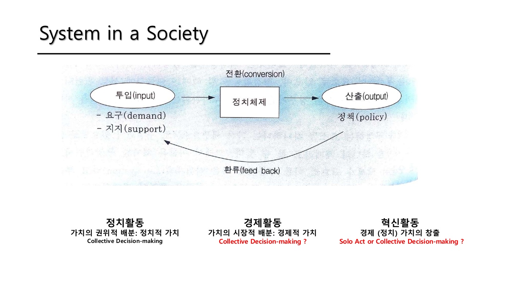
1) 위 그림: 정치체계 모형
🗣 교수는 상단 그림을 "정책학 개론의 정치체계 모형"(Easton)이라고 소개했다. 요구(demand)와 지지(support)가 투입되면 정치체제가 처리해 정책(output)을 내고, 그 결과가 다시 환류(feedback)된다. 시스템은 사회 전체에 둘러싸여 있고, 목적이 있으면 그것을 달성하는 방식으로 돌아간다.
🗣 경영학에서는 **Porter의 가치사슬(미시)과 다이아몬드 모델(거시)**이 비슷한 고민을 해 왔다. 즉 "시스템으로 보는 눈"은 정치학·경영학 모두에 있었고, 이 수업은 그 눈을 혁신에 적용한다.
💡 Easton(1953)의 정치 정의는 "사회를 위한 가치의 권위적 배분(authoritative allocation of values for a society)". 슬라이드의 "가치의 권위적 배분"이라는 표현이 여기서 왔다.
2) 세 활동의 비교 — 🗣 교수 설명 기준
| 정치활동 | 경제활동 | 혁신활동 | |
|---|---|---|---|
| 슬라이드 📄 | 가치의 권위적 배분 (정치적 가치) | 가치의 시장적 배분 (경제적 가치) | 경제(·정치) 가치의 창출 |
| 결정 방식 📄 | Collective decision-making | Collective decision-making ? | Solo act or Collective ? |
| 🗣 교수 설명 (W01) | 대통령·국회가 정하고, 우리가 권위를 위임한 것 | 가격을 붙일 수 있는 것은 가격으로. 희소자원의 배분. 개인 문제가 아닌 전체의 문제 | 잡스·게이츠를 떠올리지만 혼자 한 게 아니다. 이미 하던 것을 "되겠다" 하고 치고 나왔고, 시장이 당겨 줬기 때문에 성공 |
| 🗣 교수 설명 (W02 재설명) | 요구에 대응해 소화하는 시스템. 독재·민주주의 등 모습은 다양 | 정치와 다른 점은 계약 관계 — 이론상 당신과 나는 동등한 1:1 계약. 사람에게 가장 익숙한, 서로 동의한 방식 | 지식을 만드는 것. 논문만 쓰면 지식 활동, 값어치가 붙으면 혁신 |
🗣 [W01 11:11] "근데 더 자세히 들여다보면 스티브 잡스나 빌 게이츠가 혼자 한 게 아니야. 그전에 하고 있었어. 하고 있다가 보니까 탁, '이거 돈 되겠다' 하고 치고 나온 거지. 물론 그렇게 판단하는 사람이 엄청 많죠. 망할 사람도 있고 되는 사람도 있지만, 왜냐, 시장이 그걸 당기니까."
🗣 [W02 07:06] "혁신 활동은 뭐냐, 지식을 만드는 겁니다. 기본적으로 지식을 만드는데 이 지식이 값어치가 있는 것이죠. 그냥 논문 쓰는 거면 그건 그냥 지식 활동이고, 값어치가 있는 지식 활동은 혁신이라고 부릅니다."
3) 슬라이드의 두 물음표가 뜻하는 것
- 경제의 "?" — 🗣 정치는 권위를 위임한 집단 결정이지만, 경제는 1:1 계약의 모음이다. 전체의 문제(희소자원 배분)를 풀긴 하는데, 누가 모여서 결정한 것은 아니다. 그래서 "집단적 결정"이라 부르기 애매하다는 뜻의 물음표.
- 혁신의 "?" — 🗣 Schumpeter의 기업가(entrepreneur)처럼 solo act로 이해하기 쉽지만 실제로는 그렇지 않다. 그래서 이 수업은 collective한 체제, 즉 혁신시스템을 다룬다. → 📄 p13 "Innovation as a system activity (collective action)".
4) 묶는 개념: Collective Action Problem
🗣 교수가 이 슬라이드의 핵심으로 꼽은 개념. 사람은 혼자 살 수 없고, 여럿이 살 때 생기는 문제를 푸는 방식이 정치(권위)와 시장(가격)이다. 혁신도 같은 문제를 푸는 활동이다. 따라서 시스템 = 사회에서 발생하는 문제를 풀어 나가는 하나의 체제·방식이며, 여러 행위자(actor)와 네트워크로 이루어진다.
5) 🗣 이 수업의 기본 입장 (W02 재설명에서 추가)
펌(firm) 레벨에서 어떻게 시스템을 만들 것인가. 새 비즈니스를 할 때 제품·서비스만이 아니라 생태계 전체를 만드는 고민. 이것이 혁신시스템론과 통하며, 마지막 주제인 혁신생태계론(W01/11)은 이를 펌 단위로 다룬다.
수업에서 나온 논점
- W02 토론 Q1 (애플은 폐쇄적인데 왜 생태계에 성공했나) — "오픈"의 의미와 누가 오케스트레이션하느냐로 정리됐다. 애플은 꽉 잡고 안드로이드는 풀어 줬다는 것. 혁신을 "펌이 시스템을 만드는 일"로 보는 이 슬라이드의 입장이 실전 질문으로 나온 사례. →
수업노트/W02 §6 Q1 - W02 토론 Q6 (Korea Paradox) — 🗣 "국가가 R&D에 돈을 집어넣을 줄은 알았지, 나오는 걸 어떻게 소화할지는 어떤 생각을 갖고 있느냐." 혁신을 투입–산출–환류 시스템으로 보면, 한국은 투입은 세계 최고인데 산출을 소화하는 환류가 약하다는 문제 제기. →
수업노트/W02 §6 Q6
보충 사례
교수가 직접 든 사례는 잡스·게이츠뿐이다. 아래는 이해를 돕기 위한 외부 사례이며 답안에는 교수 사례를 우선 쓴다.
- 아이폰: 인터넷·GPS·터치스크린·음성인식은 미국 정부 연구비로 먼저 개발된 기술이다(Mazzucato 2013, The Entrepreneurial State). 잡스의 "치고 나옴"이 가능했던 것은 이미 누군가 하고 있었기 때문 — 🗣 교수 발언과 정확히 같은 구조.
- 한국 4M DRAM 공동개발(1986–89): 정부·ETRI·삼성·현대·금성이 함께한 국가 R&D. 삼성 반도체 신화의 출발이 집단적 활동이었던 예. → 개발국가(12/5)와 연결.
수업 프레임에서의 위치
- 이 슬라이드는 강의 전체의 입장 선언이다. 이후 나오는 모든 이론(NIS, SIS, TIS, StS, MOIP, Ecosystem — W01/10 강의 지도)은 "혁신 = 집단적 시스템 활동"이라는 전제 위에 있다.
- 🗣 W02 첫머리에서 교수는 이 슬라이드를 포함한 세 문제의식을 "메타적으로 계속 생각하면서 수업을 따라오라"고 했다. 매주 새 이론이 나올 때마다 "이 이론은 정치·경제·혁신 중 어디를 어떻게 다루는가"를 되묻는 틀로 쓰라는 뜻.
- "collective"라고 답한 뒤에도 질문이 남는다: 그 collective에 누가 포함되는가(사용자? 시민?). → W01/07 Civic Actor, W02-2/08 새로운 문제를 제기할 권리, 12/12 신시민성.
- 혁신활동 = "값어치 있는 지식 만들기"라는 정의는 다음 주 **미시적 기초(학습)**로 곧장 이어진다. 지식은 어떻게 만들어지는가 → 상호작용을 통한 학습(W02-1/02, W02-1/07).
관련 개념 · 논문
- Easton, D. (1953) The Political System — 정치체계 모형, 가치의 권위적 배분. 🗣 교수는 "정책학 개론의 모형"이라고만 언급. (원문 미확인)
- Schumpeter — 기업가와 창조적 파괴. "solo act" 관점의 원형. 📄 p8에서도 Entrepreneur / Creative Destruction으로 등장.
- Porter — 가치사슬(1985), 다이아몬드 모델(1990). 🗣 경영학판 "시스템으로 보기".
- Collective action problem 💡 — 정치학·경제학의 표준 개념(Olson 1965 등). 교수는 이름만 언급.
- 연결: W01/03 인간에 대한 4가지 기본 이해 · W01/04 혁신–혁신시스템–시스템 혁신 · W01/09 혁신시스템 접근법의 계보 · W01/11 Innovation Ecosystem · W02-1/07 사용자–생산자 상호작용
예상 퀴즈 포인트
- 정치·경제·혁신 활동을 "가치"와 "결정 방식"을 기준으로 비교하고, 셋을 묶는 개념(collective action problem)을 설명하라.
- "혁신은 solo act인가?" — 이 수업의 입장과 근거를 교수의 잡스·게이츠 예시를 들어 서술하라. (시장이 당겨 줬다 / 이미 누군가 하고 있었다)
- 교수가 말한 혁신활동의 정의("값어치 있는 지식을 만드는 활동")를 쓰고, 지식 활동과 혁신의 차이를 설명하라.
- 응용: 투입–전환–산출–환류 모형을 한국 R&D 시스템에 적용하면 Korea Paradox는 어느 단계의 문제인가? (스스로 답을 만들어 볼 것)
인간–제도–과학기술의 상호구성
Co-constitution of Actors, Institutions and Socio-technical Systems (Geels 2004)
문제의식 1 — Geels (2004)
한 줄 정의
사회를 설명할 때 보통은 사람·조직과 규칙·제도 두 축만 본다. 이 수업은 여기에 **물질세계(과학기술, 인공물, 자연)**를 세 번째 축으로 넣고, 세 축이 **서로를 만들어 간다(상호구성)**고 본다. 기술은 사람이 만들지만, 일단 깔리면 사람의 행동 범위와 제도까지 바꾼다.
쉽게 말하면
세 명이 한 집에 사는데, 한 명은 사람(습관, 성공 공식), 한 명은 규칙(집안 규칙, 법), 한 명은 집 자체(구조, 배선, 엘리베이터 유무)다. 규칙은 사람이 만들고 사람은 규칙을 따른다 — 여기까지는 보통 사회과학. 그런데 집이 5층인데 엘리베이터가 없으면 노인은 못 살고, "무거운 짐은 1층에" 같은 규칙이 생긴다. 집(기술)이 사람과 규칙을 바꾸는 것이다. 거꾸로 규칙이 "엘리베이터 의무화"를 정하면 집이 바뀐다. 셋은 서로를 끊임없이 고쳐 쓴다.
핵심 내용
📄 슬라이드 (W01 p7)
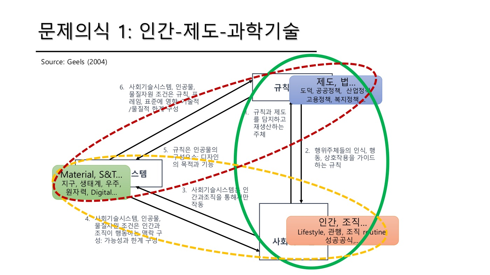
1) 세 축과 그림 읽는 법
| 축 | 슬라이드 예시 | 색 |
|---|---|---|
| 규칙·제도 | 도덕, 공공정책, 산업정책, 고용정책, 복지정책, 법 | 파랑 |
| 인간·조직 | Lifestyle, 관행, 조직 routine, 성공 공식 | 주황 |
| 사회기술시스템 (Material, S&T) | 지구, 생태계, 우주, 원자력, Digital | 초록 |
🗣 초록 실선 원(규칙 + 인간·조직)이 기존 사회과학이 다루던 범위다. Adam Smith도 분업과 전문화는 얘기했지만 과학기술 자체는 다루지 않았다. 점선 타원들이 물질세계를 더한 것이고, 이 수업은 그 확장된 범위를 본다.
2) 여섯 개 화살표 — 🗣 교수의 예시와 함께
| # | 방향 | 뜻 | 🗣 수업 예시 |
|---|---|---|---|
| ① | 인간·조직 → 규칙 | 규칙·제도를 담지하고 재생산하는 주체 | (사람이 없으면 규칙도 없다) |
| ② | 규칙 → 인간·조직 | 행위주체의 인식·행동·상호작용을 가이드 | (법·도덕이 행동을 이끈다) |
| ③ | 인간·조직 → 시스템 | 사회기술시스템은 인간과 조직을 통해서만 작동 | 인간이 없으면 시스템은 안 움직인다 |
| ④ | 시스템 → 인간·조직 | 인공물·물질조건이 **행동의 맥락(가능성과 한계)**을 구성 | 서울 사람의 24시간과 부산 사람의 24시간은 다르다 — 서울은 뒷골목까지 전철이 들어간다. 핸드폰 없는 시대로 돌아가면 전혀 다른 삶. 선진국 전력소비는 2005년경 피크 후 하락, 한국은 아직 상승 |
| ⑤ | 규칙 → 시스템 | 규칙은 인공물의 구성요소 — 디자인의 목적과 기능에 새겨짐(inscribe) | AI 챗봇 이루다: 어떻게 교육시키느냐에 따라 달라진다 → 기술은 중립적이지 않다. Langdon Winner "Do Artifacts Have Politics?" |
| ⑥ | 시스템 → 규칙 | 물질조건이 규칙·프레임·표준을 규제 — 기술적/물질적 한계 | 대전 공유자전거 타슈는 대전이 평평해서 20년 가까이 굴러갔다. 부산에서는 안 된다. 물리적 조건을 뛰어넘어 제도를 밀어붙이기는 어렵다 |
🗣 [W01 14:36] "서울에서 사는 사람의 24시간과 부산에서 사는 사람의 24시간이 다르다. 왜 다르냐, 서울은 뒷골목까지 전철이 들어가 있어요. 여러분 지금 만약에 핸드폰이 없는 시대로 돌아가라, 돌아가긴 하겠지. 근데 전혀 다른 라이프를 시작해야지."
3) 역적응(reverse adaptation) — ⑤번 화살표의 어두운 면
🗣 사람이 편하려고 수단을 만들었는데, 오히려 사람이 수단에 적응한다. 수단이 목적을 가려 버린다.
🗣 [W01 19:46] "그러니까 사람들이 편하기 위해서 수단을 만들었는데 오히려 그 수단에 사람들이 적응하는 거죠. 거기에 맞춰서 하는 거."
🗣 전력망 사례: 원전·화력 집중 발전 시스템에서는 송전망 건설이 전체 효율에 맞다. 지역 주민이 반대하면 "전체 시스템을 위해 왜 고집이냐"는 시각이 나오는데, 이것이 효율성을 위해 사람을 시스템에 맞추라는 역적응 논리다. 분산형 태양광 같은 대안이 나오는 이유.
🗣 [W01 20:10] "전력망을 세우는 게 맞잖아요. 그게 전체 시스템의 효율성에 맞는 걸로 이해할 수 있잖아요. 근데 사람들이 반대해. '우리 동네는 싫어, 하지 마.' '무슨 소리야, 전체 시스템을 위해서 그래야지. 이상한 사람들이 있네.' 이렇게 되는 거죠. 그러니까 그런 수단이 목적을 오히려 가려버리는 것들이 있었다는 것이죠."
→ 역적응은 W01/05 사용자 고착에서 다시 나온다 (기술 고착이 역적응을 통해 사회적 관습으로 내재화).
4) 🗣 W02 재설명에서 추가된 것
- 인간과 마카크 원숭이의 차이: 원숭이 무리도 위계는 있지만 도구를 쓰지 않는다. 인간은 도구를 쓰고 이것이 문명화(civilization)로 발달했다. 이 관계를 보는 것이 STS의 고민.
- Ulrich Beck의 위험사회(Risk Society): 제1근대는 대량생산과 민주화였는데, 제2근대에서는 사람이 만들어 낸 위험(원자력, 환경)이 등장했다. 나만 당하는 게 아니라 다 같이 당한다. 옛날엔 페어한 계약만 얘기했는데 이제 지구온난화·방사성 폐기물처럼 함께 결정해야 할 것이 하나 더 생겼다. → 물질 축이 왜 사회과학에 들어와야 하는지의 근거.
- 비트코인 → 스테이블코인 사례: 비트코인은 국경 없는 신뢰를 기술이 만든 것(정부 보증 없이 스스로 보증). 그런데 국가가 이를 스테이블코인으로 포섭해 달러·국채에 묶어 버렸다. 교훈: 기술이 신뢰의 기반을 만들었지만 국가를 뛰어넘지는 못했다. 제도·법이 어떻게 테이크오버하느냐, 사람들이 어떻게 투입하느냐에 따라 달라지는 다이내믹스가 우리의 관심.
🗣 [W02 15:31] "그렇다고 해서 기술이 모든 걸 할 수 있는 건 아니란 말이에요. 분명히 신뢰를 제공하는 기술적 기반을 뒀지만 국가를 뛰어넘고 그런 게 안 되고. 제도·법이 어떻게 테이크오버하냐에 따라서 달라지고, 사람들이 어떻게 투입하냐에 따라서 달라지는 것이."
- 삼국지·홍길동에는 기술 얘기가 없다. 적벽대전은 결국 화공(기술)으로 이긴 싸움인데 유비가 누구와 편을 먹었는지만 얘기한다. 실제로는 기술 부분이 훨씬 크다.
5) AI의 아이러니 (④·⑥의 현재형)
🗣 AI는 잘 작동하는데 왜 잘하는지 모른다. Anthropic 등으로 인재가 몰리는 것은 "왜 되는지"를 밝히러, 즉 사이언스를 하러 가는 것으로 보인다. NVIDIA·하이닉스·삼성이 이렇게 될 줄 누가 알았나 — 기술이 어떤 의미를 갖는지 모르면 경영도 정책도 못 한다.
수업에서 나온 논점
- 🗣 W02 첫머리: 이 문제의식을 포함한 세 가지를 "메타적으로 계속 생각하면서" 수업을 따라오라. 즉 이후 모든 이론을 "이 이론은 세 축 중 무엇을 어떻게 다루나"로 읽는 틀.
- W02 Q3 (지휘부 지시에 현장이 제동을 걸 시스템이 있나) — 새 장치(기술)를 도입했는데 현장 관행(인간·조직)과 맞지 않는 상황. 🗣 "문화적인 부분이 분명히 있지만 그럼에도 시스템을 만들어 내는 것." 빠른 조직은 구조를 만들면 안 굴러가고, 공군·방산처럼 한 번에 세게 가는 조직은 리뷰 시스템이 필요. → 규칙(리뷰 시스템)과 조직 문화(인간·조직), 도입 장비(시스템)의 상호구성 사례. →
수업노트/W02 §6 Q3
보충 사례
- Geels (2004) 원문(
참고자료/PDF 보유)은 이 그림을 부문혁신시스템(SIS)이 생산 쪽만 보는 한계를 넘어 **사용·소비까지 포함한 사회기술시스템(StS)**으로 확장하는 논문이다. 그림의 세 축은 원문에서 (a) socio-technical systems, (b) rules/institutions, (c) actors/social groups. W09 StS 주차의 핵심 리딩이라 그때 다시 본다. - **Langdon Winner (1980)**의 유명한 예: 뉴욕 롱아일랜드 공원도로의 낮은 고가도로. 버스가 지나가지 못하게 설계해 대중교통을 이용하는 저소득층·흑인의 해변 접근을 막았다는 해석. 인공물에 정치가 새겨진다(⑤)는 고전적 사례. (해석의 사실 여부는 논쟁이 있음)
- QWERTY 키보드(W01/05에서 교수 언급)도 ④·⑥의 예: 한 번 깔린 배열이 사용자 습관과 표준을 고정한다.
수업 프레임에서의 위치
- 강의 전체의 문제의식 1. 문제의식 2(시스템 혁신, W01/04)와 3(공공가치·시민, W01/07)의 토대다.
- 이 그림의 확장판이 **W09 사회기술시스템(StS)**과 시스템 전환(Transition) 이론이다. "구조의 변화"를 보는 이론들(TS, TIS, StS)은 모두 이 세 축이 함께 바뀌는 과정을 다룬다.
- 물질 축을 넣는 순간 "기술은 하면 되는 것"이라는 경제학적 가정이 깨진다 → W01/11에서 🗣 "기술은 자본과 노동의 조합이 아니다, 계속 부딪히고 고민해야 한다"로 이어짐.
관련 개념 · 논문
- Geels, F. (2004) — 이 그림의 출처. ★PDF 보유 (W09 핵심 리딩).
- Winner, L. (1980) "Do Artifacts Have Politics?" — 🗣 언급. 기술의 비중립성.
- Beck, U. (1986) Risk Society — 🗣 W02 언급. 제2근대의 인공 위험.
- 연결: W01/01 · W01/05 세 가지 고착(역적응) · W01/08 시민성(Scientific citizenship: 규칙을 누가 정하나) · W02-2/05(기술 경로 고착)
예상 퀴즈 포인트
- Geels(2004)의 세 축(규칙·제도 / 인간·조직 / 사회기술시스템)을 쓰고, 기존 사회과학과 다른 점이 무엇인지 설명하라.
- 여섯 관계 중 ④(시스템이 행동의 맥락을 구성)와 ⑤(규칙이 인공물에 새겨짐)를 수업의 예시(서울/부산의 24시간, 이루다·전력망)로 설명하라.
- 역적응(reverse adaptation)이란 무엇이며, 전력망 사례에서 어떻게 나타나는가?
- 비트코인–스테이블코인 사례가 "기술–제도–인간의 상호구성"을 어떻게 보여 주는지 서술하라.
인간에 대한 4가지 기본 이해
Four Views of the Human — Rational / Social / Tool-using / Learning
Four views of the human
한 줄 정의
혁신을 시스템으로 보려면 "사람이란 어떤 존재인가"부터 정해야 한다. 경제학은 사람을 이익을 계산하는 합리적 개인으로만 보지만, 이 수업은 네 겹으로 본다: ① 합리적으로 선택하는 인간, ② 사회적 관계 속의 인간, ③ 도구를 쓰는 인간, ④ 배우는 인간. 혁신학이 가장 강조하는 것은 ④다 — 혁신 역량은 곧 학습 역량이다.
쉽게 말하면
한 사람을 네 개의 렌즈로 본다고 하자.
- 계산기 렌즈: 뭐가 이득인지 따진다. (경제학의 기본 렌즈)
- 관계 렌즈: 가족·동문·국민으로서 행동한다. 혼자 결정하지 않는다.
- 도구 렌즈: 스마트폰·전기·앰뷸런스 없이는 못 산다. 도구가 이미 삶의 일부다.
- 학습 렌즈: 어제보다 오늘 더 잘한다. 해 보고, 써 보고, 남과 부딪히며 배운다.
혁신은 네 렌즈가 다 필요하지만, "새 지식을 만드는 활동"이므로 학습 렌즈가 핵심이다.
핵심 내용
📄 슬라이드 (W01 p8)
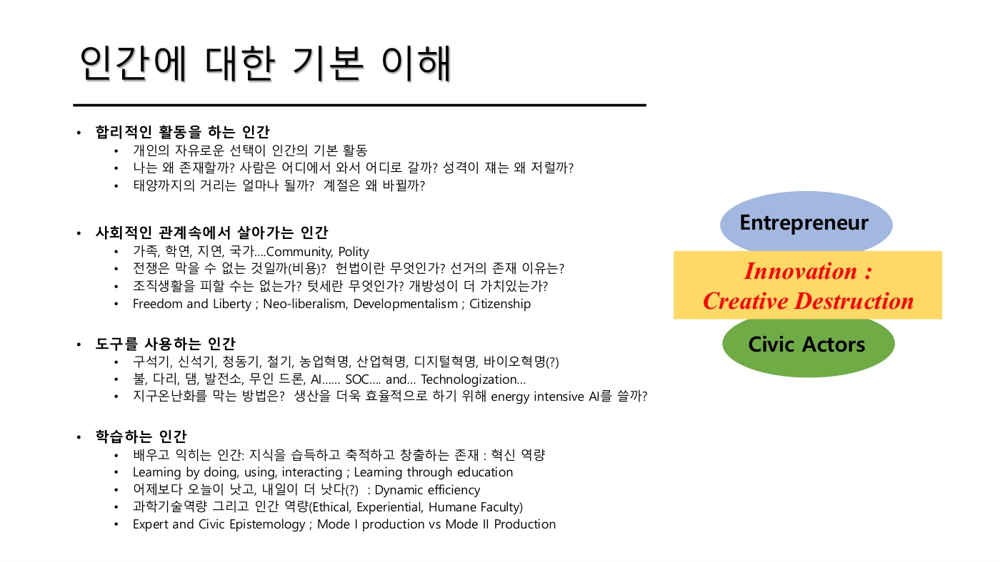
🗣 요지: 경제학의 합리적 행위자(rational actor) 가정을 넘어서는 것.
1) 합리적 활동을 하는 인간 — Entrepreneur의 원형
- 📄 개인의 자유로운 선택이 기본 활동.
- 🗣 유틸리티를 높이려는 존재. 그러나 "나는 왜 존재할까", "태양까지의 거리는 얼마일까" 같은 근본적 질문도 하는 존재다. 계산만 하는 존재가 아니다.
- 📄 슬라이드 좌측의 Entrepreneur / Innovation: Creative Destruction 라벨이 이 인간관과 짝을 이룬다.
2) 사회적 관계 속에서 살아가는 인간 — Civic Actor의 원형
- 📄 가족, 학연, 지연, 국가, Community, Polity. 전쟁·헌법·선거·조직생활·텃세·개방성에 대한 질문.
- 📄 여기서 Freedom/Liberty, 신자유주의, 개발주의, Citizenship 논의가 나온다.
- 🗣 슬라이드 좌측의 Civic Actors 라벨과 짝. → W01/07, W01/08로 이어짐.
3) 도구를 사용하는 인간 — Technologization
- 📄 구석기
디지털혁명바이오혁명(?). 불, 다리, 댐, 발전소, 드론, AI, SOC. - 🗣 "우리는 도구 속에 있다." 도구가 인간성을 규정할 수도 있다(Harari, Homo Deus). 역사학자들은 에너지 획득 수단으로 시대를 구분한다.
- 🗣 SOC를 다시 봐야 한다: 예전엔 도로·항만이었다면, 이제는 기술화(technologization)된 인프라 — 전력망, 디지털, AI.
- 일본이 아직 팩스·동전을 쓰는 이유: 디지털로 가면 동전 세는 기계 회사들이 사라지므로 두려워한다는 해석. 반면 아프리카는 은행 없이 핸드폰으로 바로 금융에 접근.
- 대구 노인 무료 버스 논쟁: 공공이 접근 수단을 제공하느냐에 따라 사회 수준이 달라진다. 그 사회는 이미 그 기술을 "다 쓰는 것"으로 전제하기 때문.
- 응급실 '뺑뺑이' 사례: 아기를 잃은 아버지가 "앰뷸런스를 타고 병원까지 가서 진찰이라도 받아 봤으면" 했다는 말. → **앰뷸런스로 병원 가는 것은 이미 '기본'**으로 여겨진다.
🗣 [W01 29:56] "다시 얘기하면 앰뷸런스를 타고 진찰까지 가는 거는 기본으로 생각하는 거예요. '이 정도는 해야 되는 거 아니야.' 그러니까 우리가 그렇게, 기술이라는 게 무슨 비즈니스 하고 이런 개념이 아니고 우리 삶 속에 이렇게 들어와 있다."
- 📄 딜레마 질문: 지구온난화를 막으려면? 생산 효율을 위해 energy-intensive AI를 쓸까?
4) 학습하는 인간 ★ 혁신학이 가장 강조
- 📄 배우고 익히는 인간: 지식을 습득·축적·창출하는 존재 = 혁신 역량. Learning by doing / using / interacting; learning through education.
- 📄 "어제보다 오늘이 낫고 내일이 더 낫다(?)" = 동태적 효율성(dynamic efficiency). 💡 정태적 효율성(주어진 자원의 최적 배분)과 대비되는 개념 — 시간이 갈수록 더 잘하게 되는 능력.
- 🗣 한국은 왜 잘하나: 수기치인(修己治人) — 조선 성리학의 자기 수양·학습이 DNA처럼 들어 있다는 해석. 과학기술 역량뿐 아니라 봉준호·박찬욱·오징어 게임 같은 문화적 역량도.
- 📄 과학기술 역량 + 인간 역량(Ethical, Experiential, Humane Faculty).
5) 전문가 인식론 vs 시민 인식론 (Expert vs Civic Epistemology)
- 🗣 과학자가 "안전하다"고 하는 것과 일반인이 "안전하다"고 느끼는 것은 다르다. 그 차이는 어떻게 정해지는가? 한편에서는 이를 '선동'이라 치부하지만…
- 🗣 후쿠시마 사례: 정부가 농산물 안전 판정을 내렸어도 협동조합의 엄마들이 직접 방사능 검사를 했다. 안전(safety)과 안심(assurance)은 다르다. 안심은 어떻게 만들어지는가.
🗣 [W01 33:54] "자기들이 직접 농산물의 방사능 검사도 하고 검토하고 다 했습니다. 그래서 안전하고 안심하고 다르죠. 안심이 어떻게 되는 거냐, 그걸 가지고 얘기하는."
- 📄 Mode I vs Mode II production — 💡 Gibbons et al.(1994): Mode 1은 학문 분과 안에서 전문가가 만드는 지식, Mode 2는 응용 맥락에서 여러 주체가 함께 만드는 지식. W04(거시적 접근 II) 리딩이라 그때 상세히.
- 🗣 Innovation = creative destruction으로 기업가를 많이 말하지만, 일반 사람들(civic actors)은 무엇을 하는가가 이 수업의 관심.
- 🗣 의료 데이터: 개인 동의 없이는 못 쓴다. 중국이 앞서는 것은 개인 데이터를 그냥 가져가기 때문이지만 그러면 안 된다. → 학습(데이터)과 시민 권리의 충돌.
수업에서 나온 논점
- W02 §2 학습의 미시적 기초는 이 ④번 인간관을 한 주 통째로 확장한 것. 🗣 Lundvall "새로운 지식은 주고받는 상황에서 나오지 혼자 팍 나오는 게 아니다." → W02-1/02, W02-1/03.
- W01 §7 축구 비유: 팀워크는 해 봐야 안다(learning by doing). 한국은 가끔 천재(박지성)가 나오지만 일본은 기본기와 팀워크로 프리미어리그 10명. → 학습하는 인간 + 사회적 관계 속 인간의 결합.
- W02 Q3: 공군의 위계 조직에서 현장 불만을 제동 거는 시스템 — 배민 참석자는 "근거를 숫자로 만들어 설득"한다고 답. 조직 안에서 학습이 어떻게 결정에 반영되느냐의 문제.
보충 사례
- Civic epistemology는 Sheila Jasanoff(2005) Designs on Nature의 개념. 한 사회가 "무엇을 믿을 만한 지식으로 받아들이는가"의 집단적 방식은 나라마다 다르다(미국은 소송·공개 논쟁, 영국은 전문가 신뢰, 독일은 제도적 합의). 후쿠시마 엄마들의 직접 검사는 "정부 판정"이 아니라 "직접 측정"이 안심을 만든 한국·일본식 시민 인식론의 예로 읽을 수 있다. W04 리딩.
- 안전 vs 안심은 W01/11에서 🗣 "안전이 병목이 된다"(안전을 평가할 시스템은 남에게 넘기지 말라)와 W01/08 Scientific Citizenship(신고리 공론화)으로 이어진다.
수업 프레임에서의 위치
- W01/01의 "혁신은 collective"라는 주장을 사람 단위에서 뒷받침한다: 사람은 관계 속에서, 도구와 함께, 배우면서 산다 → 혁신도 그렇게 일어난다.
- ④ 학습하는 인간 → W02 미시적 기초(STI/DUI) 전체.
- ② 사회적 인간 + ⑤ 시민 인식론 → W01/07 공공가치, W01/08 시민성, 12/12 신시민성.
- ③ 도구 사용 인간 → W01/02의 물질 축, W01/05 사용자 고착("안락함·청결함은 모두 기술에 의지").
관련 개념 · 논문
- Jasanoff (2005) Designs on Nature Ch.10 Civic Epistemology — W04 Core Reading.
- Gibbons et al. (1994) The New Production of Knowledge — Mode 1/2. W04 Core Reading.
- Harari Homo Deus — 🗣 언급.
- 연결: W01/01 · W01/07 공공가치와 Civic Actor · W01/08 시민성 · W02-1/02 학습 · W02-1/03 STI/DUI
예상 퀴즈 포인트
- 네 가지 인간관을 쓰고, 혁신학이 "학습하는 인간"을 가장 강조하는 이유를 설명하라.
- 동태적 효율성(dynamic efficiency)이란 무엇이며 혁신 역량과 어떻게 연결되는가?
- "안전과 안심은 다르다" — 전문가 인식론과 시민 인식론의 차이를 후쿠시마 사례로 설명하라.
- "기술은 비즈니스 개념이 아니라 우리 삶 속에 들어와 있다"는 말의 뜻을 SOC의 기술화(technologization) 관점에서 서술하라.
혁신 → 혁신시스템 → 시스템 혁신의 층위
Innovation / Innovation System / System Innovation (Transition)
문제의식 2 — System Innovation
한 줄 정의
"혁신"은 세 층위로 커진다. 혁신(새 제품·서비스·행동) → 혁신시스템(그것을 만들어 내는 행위자들의 체제) → 시스템 혁신/전환(생산과 소비를 아우르는 시스템 전체가 바뀌는 것). 이 수업은 세 번째, 즉 제품 하나가 아니라 시스템 전체가 어떻게 바뀌는가에 관심이 있다. 기후변화, 수도권 집중, Korea Paradox가 모두 "시스템이 안 바뀌는" 문제다.
쉽게 말하면
- 혁신 = 더 좋은 전기차 한 대를 만드는 것.
- 혁신시스템 = 그 차를 만들어 내는 회사·부품사·연구소·정부·표준의 네트워크.
- 시스템 혁신 = 주유소가 충전소로, 정비소·전력망·세금·운전 습관까지 통째로 바뀌는 것.
전기차 한 대는 몇 년이면 나오지만, 시스템 전체가 바뀌는 데는 수십 년이 걸리고 자주 실패한다. 왜 실패하는지가 다음 개념(W01/05 고착)이다.
핵심 내용
📄 슬라이드 (W01 p9)
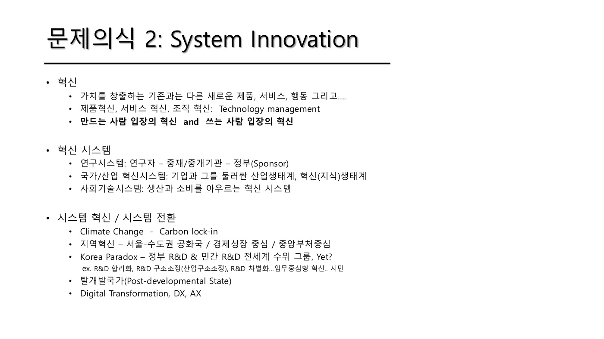
1) 혁신의 정의와 두 관점
- 📄 혁신 = 가치를 창출하는, 기존과 다른 새로운 제품·서비스·행동 그리고…. 제품혁신·서비스혁신·조직혁신은 technology management 영역.
- 📄 만드는 사람 입장의 혁신 vs 쓰는 사람 입장의 혁신.
- 🗣 기존 혁신론은 기업(만드는 쪽) 중심 — 노동자·연구자·엔지니어·조선소 용접공. 마케팅은 결국 쓰는 사람 입장을 생각하는 사람들.
- 🗣 (W02) 이제 쓰는 사람 입장 — AI 시대에 내 능력이 사라진다면 커리어를 어떻게 가져갈 것인가. 현장 노동자도 쓰는 사람으로 볼 수 있다.
- 🗣 (W02) 프로슈머(prosumer): Toffler의 1980년대 통찰. 디지털 시대에는 소비자가 자기 것을 자기가 만들어 쓴다. → 혁신시스템이 소비자까지 포함하는 시스템으로 확장.
2) 혁신시스템의 세 층위
| 층위 | 구성 | 🗣 설명 |
|---|---|---|
| 연구시스템 | 연구자 – 중재/중개기관 – 정부(sponsor) | 가장 좁은 시스템 |
| 국가/산업 혁신시스템 | 기업과 그를 둘러싼 산업생태계, 혁신(지식)생태계 | 산업·기업 중심 (NIS) |
| 사회기술시스템 | 생산과 소비를 아우르는 혁신시스템 | 소비자·사용자까지 포함 (StS) |
🗣 국가혁신시스템은 산업·기업 중심이지만 사회기술시스템은 생산과 소비를 아우른다. → W01/10의 "구조의 차이 vs 구조의 변화" 구분과 대응.
3) 시스템 혁신 / 시스템 전환 — 왜 필요한가
- 🗣 제품 혁신·프로세스 혁신이 아니라 전체 시스템의 혁신이 어떻게 벌어지고 어떤 영향을 주는지를 보려 한다.
- 🗣 혁신생태계론이 주목받는 이유: Uber 같은 새로운 디지털 비즈니스는 생태계를 새로 만들어야 하고 게임의 룰을 다시 정하기 때문.
- 🗣 기후변화 — carbon lock-in: 해결하려면 시스템이 바뀌어야 하는데 잘 안 바뀐다. 좋은 기술만 만든다고 되는 게 아니라 시스템 자체가 변해야 한다.
- 🗣 테슬라, 그리고 테슬라를 캐치업한 BYD 등은 자동차 회사라기보다 테크 회사. 데이터·소프트웨어 중심이라 내연기관 회사와 달리 carbon lock-in에서 벗어났다.
- 🗣 (W02) AI: 세상에 없던 것이 생긴다(AGI 논쟁). "AI가 인류를 wipe out할 확률 10%"라는 말이 공식적으로 나오고, 미국에서는 데이터센터 반대가 번진다. → 시스템 차원의 파워가 벌어지는 것.
4) 한국의 시스템 혁신 과제 — 🗣 교수의 세 가지
(a) 지역혁신 — 서울·수도권 공화국
- 📄 경제성장 중심, 중앙부처 중심. 🗣 총리도 중앙부처 지역 이전을 언급.
- 🗣 (W02) 수도권 집중은 시장이 그렇게 흘러가면 막을 수 없다. 막을 수 없다는 것이 옳다는 뜻은 아니고 구조가 그렇다는 것. 그럼에도 어떻게 변화시킬 것인가가 목표.
🗣 [W02 21:01] "시장이 그렇게 흘러가는 거는 막을 수 없다는 얘기는, 그것이 옳다는 의미는 아니고. 구조가 그렇게 돼 있을 수밖에 없다는 거예요. 그럼에도 불구하고 그걸 어떻게 변화시킬 것이냐, 그런 것들이 목표가 되겠습니다."
(b) Korea Paradox
- 📄 정부 R&D·민간 R&D 모두 세계 수위 그룹, Yet? (R&D 합리화, 구조조정, 차별화, 임무중심형 혁신, 시민…)
- 🗣 거칠게 말하면 "우리는 왜 AI를 먼저 못 만들었을까?" 그 분야 사람들은 다 알고 있었을 텐데. → 정부가 너무 중심에 서 있다.
🗣 [W01 38:25] "콕 집어서 얘기하면 우리는 왜 AI를 먼저 못 만들었을까. 저거 되는 건지는 그 분야에 있는 사람 다 알았을 텐데. 왜 그랬을까. … 너무 정부가 중심에 서 있어요. 너무 정부가."
(c) 탈개발국가(Post-developmental State)
- 🗣 (W02) 서울대 사회학과 장경섭 교수가 developmental state를 비판적 시각에서 영어로 많이 썼고 중국에서 베스트셀러.
- 🗣 동아시아 3국의 서구 수용 이데올로기: 일본 화혼양재(和魂洋才), 한국 동도서기(東道西器), 중국 중체서용(中體西用) — 다 비슷한 얘기. 그래서 국가가 나서서 주도했고 관료 시스템이 발달했다.
- 🗣 21세기의 과제: 일본은 잃어버린 30년. 한국은 탑다운이 너무 강해 이를 어떻게 극복하느냐(지방화·지역혁신). 중국은 내수 시장 등에서 어려울 것.
- 🗣 DX·AX: 자본의 흐름으로 밀고 들어온다. 기업이 스스로를 자본으로 보고 메타적으로 흐름을 보는 것 = 성찰적 입장. 팔란티어처럼 "그냥 가자"는 회사도 있다.
수업에서 나온 논점
- W02 Q6 (Korea Paradox — R&D 세계 최고인데 왜 성과가 정체되나) — 🗣 "내가 이걸 알면 여기 있겠나." 국회 수준의 질문이며 우리가 지금 대답해야 하는 질문. 거꾸로 이 정도 하니까 지금 수준을 하고 있는지도 모른다(미국·중국 다음으로 모델을 만들 줄 아는 나라). 그럼에도 질문은 해야 한다.
- 참석자(김재원): 타다 사례 — 새 서비스를 타다금지법으로 없앴다. 장기적으로 밀고 가는 정부의 방향성 부족 아닌가. embedded autonomy와 연결.
- 🗣 정리: 타다는 자본과 국가의 싸움. 미국 택시는 고급 서비스, 한국 택시는 대중 서비스라 부문(sectoral) 성격의 충돌이 있었다. 이후 iM택시는 택시협동조합과, 카카오도 편을 먹었다. 가치사슬에서 누구와 편을 먹느냐를 잘 했다면 달랐을 것. 그러나 **"국가가 R&D에 돈을 집어넣을 줄은 알았지, 나오는 걸 어떻게 소화할지는 어떤 생각을 갖고 있느냐"**는 질문은 유효. →
수업노트/W02 §6 Q6
- W02 Q2: 석유화학(에틸렌) — 중국 성장에 붙어 컸다가 중국이 자립하자 막힌 산업. 위험은 다들 예측했지만 당장 단맛을 누리고 있으면 대비가 안 된다. 시스템이 안 바뀌는 이유의 실전 사례. → W01/05 조직 고착.
보충 사례
- Korea Paradox라는 용어는 한국의 R&D 투자 대비 성과(특히 사업화·기술무역수지)가 낮다는 정책 담론에서 쓰여 왔다. 💡 GDP 대비 R&D 비중은 한국이 이스라엘과 함께 세계 1~2위 수준(약 5%대)이다. 교수는 여기에 "AI를 왜 먼저 못 만들었나"를 붙여 투입이 아니라 시스템(정부 중심 구조)의 문제로 프레임했다.
- Embedded autonomy(Peter Evans 1995): 국가가 사회(특히 산업계)와 긴밀히 연결(embedded)되어 있으면서도 포획되지 않는 자율성(autonomy)을 가질 때 개발국가가 성공한다는 개념. W14 개발국가 주차에서 본격.
수업 프레임에서의 위치
- 문제의식 2. W01/01의 "혁신 = 시스템"을 한 단계 올려 "시스템 자체가 바뀌는 것"을 문제로 삼는다.
- 강의 지도(W01/10)의 "구조의 변화" 이론들(TS, TIS, StS + Transition)과 "구조 변화의 기작"(BMI, SPT, MOIP, Ecosystem)은 모두 이 문제의식에서 나왔다.
- 세 층위 중 사회기술시스템(생산+소비)은 W09 StS, 소비 쪽은 W12 Social Practice, 국가의 역할은 W14 개발국가로 각각 확장된다.
- Korea Paradox는 이 수업이 계속 되돌아오는 한국 맥락의 핵심 질문이다. Term paper 주제 후보로도 표시됨(수업노트 정제 노트).
관련 개념 · 논문
- Toffler (1980) The Third Wave — prosumer. 🗣 W02 언급.
- 장경섭 — 압축근대·개발국가 비판. 🗣 W02 언급.
- Evans (1995) Embedded Autonomy — 💡. W14 관련.
- 연결: W01/01 · W01/05 세 가지 고착(왜 시스템이 안 바뀌나) · W01/10 강의 지도 · W02-1/11 민간 R&D 수요 창출(정부 주도 R&D의 성공기)
예상 퀴즈 포인트
- 혁신 / 혁신시스템 / 시스템 혁신의 세 층위를 구분하고, 이 수업이 세 번째에 주목하는 이유를 기후변화 사례로 설명하라.
- 혁신시스템의 세 층위(연구시스템, 국가/산업 혁신시스템, 사회기술시스템)의 범위 차이를 설명하라. 사회기술시스템이 나머지와 다른 점은?
- Korea Paradox란 무엇이며, 교수가 제시한 원인 진단("정부가 너무 중심에 서 있다")을 탈개발국가 논의와 연결해 서술하라.
- "만드는 사람의 혁신"과 "쓰는 사람의 혁신"의 차이를 프로슈머 개념으로 설명하라.
세 가지 고착 — 조직·기술·사용자 lock-in
Lock-in — Organisational / Technological / User
새로운 질서 구성의 구조적 어려움
한 줄 정의
시스템이 잘 안 바뀌는 이유는 기존 시스템이 세 군데서 **고착(lock-in)**되어 있기 때문이다. 조직은 성공 공식에 갇히고, 기술은 최고가 아니어도 한 번 깔리면 못 바꾸며(QWERTY), 사용자는 네트워크와 습관 때문에 못 떠난다. 셋이 겹쳐 있어서, 이를 깨려면 새로운 **변이(variety)**를 만들어야 한다.
쉽게 말하면
오래된 동네에 새 길을 내려 한다고 하자.
- 조직 고착: 구청은 "지금까지 이 길로 잘 살았는데 왜?"라며 기존 방식을 고수한다. 성공했기 때문에 못 바꾼다.
- 기술 고착: 이미 깔린 전선·수도관·건물 때문에 더 좋은 길이 있어도 못 낸다. 매몰비용이 발목을 잡는다.
- 사용자 고착: 주민들은 지금 길에 익숙하고, 단골 가게도 그 길에 있다. 새 길이 더 좋아도 안 옮긴다.
세 개가 서로를 지탱하고 있어서 하나만 풀어서는 안 된다.
핵심 내용
📄 슬라이드 (W01 p10)
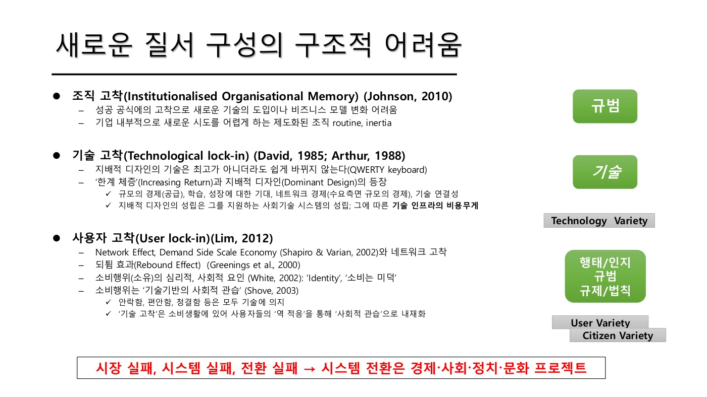
0) 🗣 도입: 개발국가 멘탈리티 — 조직 고착의 국가 버전
- 개발국가(developmental state): 박정희 시대 정부 주도 경제개발. 성공했기 때문에 그 멘탈리티에서 못 벗어난다.
- 정부 주도 R&D의 기본 논리 = "잘하는 애한테 몰아주면 뭔가 나온다". 추격(catch-up) 단계에서는 먹혔다(한국·일본·중국). 그러나 프론티어에서는 안 먹힌다. 다양성이 중요하다.
🗣 [W01 40:48] "그 R&D의 기본적인 거는 잘하는 애한테 몰아주면 뭔가 나온다는 거죠. 그러니까 추격할 만하지. 중국이 그래서 성공을 했고 일본이 그렇게 성공을 했고. 근데 아주 프론트에서는 그게 안 먹혔어요. 다양성이 중요한데."
1) 조직 고착 (Institutionalised Organisational Memory) — Johnson (2010)
- 📄 성공 공식에의 고착으로 새 기술 도입이나 비즈니스 모델 변화가 어렵다. 기업 내부적으로 새 시도를 어렵게 하는 제도화된 조직 routine, inertia.
- 💡 "성공의 함정": 잘 됐던 방식이 조직 기억으로 굳어져 환경이 바뀌어도 반복된다.
2) 기술 고착 (Technological lock-in) — David (1985), Arthur (1988)
- 📄 지배적 디자인(dominant design)의 기술은 최고가 아니더라도 쉽게 바뀌지 않는다.
- 🗣 QWERTY 키보드: 더 나은 배열이 가능했지만 이미 나와 버렸고 모두가 익숙해져 못 바꾼다.
- 📄 메커니즘: 한계 체증(increasing returns) → 지배적 디자인의 등장.
- 규모의 경제(공급), 학습, 성장에 대한 기대, 네트워크 경제(수요 측면 규모의 경제), 기술 연결성.
- 지배적 디자인의 성립 = 그를 지원하는 사회기술시스템의 성립. 그에 따른 기술 인프라의 비용 무게.
- 🗣 기후변화의 석탄·화석연료: 깔려 있는 사람도 많고 인프라도 있다. 매몰비용(sunk cost)을 버릴 수 없기 때문에 고착된다.
- 🗣 경영학은 이것을 거꾸로 이용한다: switching cost를 높인다. 커스터마이제이션으로 다른 데 못 가게 만든다.
3) 사용자 고착 (User lock-in) — Lim (2012)
| 요소 | 📄 슬라이드 | 🗣 수업 예시 |
|---|---|---|
| 네트워크 효과 / 수요측 규모의 경제 (Shapiro & Varian) | 네트워크 고착 | SKT에 속해 있으면 그 안에서 다 되니까 KT로 못 간다 |
| 되튐 효과 (rebound effect) (Greening et al. 2000) | 효율 개선이 소비 증가로 | 길이 막혀 도로를 넓혔더니 차가 더 늘었다. TV는 큰 것 보다가 작은 것으로 못 돌아간다 |
| 소비의 심리적·사회적 요인 (White 2002) | 'Identity', '소비는 미덕' | |
| 소비행위는 기술 기반의 사회적 관습 (Shove 2003) | 안락함·편안함·청결함은 모두 기술에 의지 | 서울 사람과 농촌 사람의 에너지 소비 수준이 다르다. 영국 저녁 전력 피크 = 뉴스 끝나고 모두가 전기포트로 차를 끓일 때 |
🗣 [W01 43:44] "소비를 할 때 보면 기술이 밑에 다 깔려 들어가 있다는 거죠. 영국에서는 저녁 때 전력이 갑자기 올라갈 때가 있어요. 그게 언제냐, 뉴스 끝나고. 뉴스 끝나고 사람들이 차 한 잔 마시려고 전기 포트에 이렇게."
- 📄 기술 고착은 소비생활에서 사용자의 '역적응'을 통해 '사회적 관습'으로 내재화된다. 🗣 원래 전화·인터넷만 하려던 스마트폰에 하루 종일 매달리는 것처럼. → W01/02 역적응.
4) 슬라이드 하단 도식: 고착의 겹침과 변이(variety)
- 📄 규범 / 기술 / 행태·인지 / 규제·법칙이 서로 맞물려 있다.
- 🗣 기술 고착과 행태·인지 고착이 겹쳐 있으므로, 이를 깨려면 새로운 변이(variety) — Technology variety, User variety, Citizen variety — 를 만들어 내야 한다. 기술경영이란 새로운 변이를 만드는 작업.
- 📄 마지막 줄: 시장 실패, 시스템 실패, 전환 실패 → 시스템 전환은 경제·사회·정치·문화 프로젝트. → W01/06에서 별도 정리.
수업에서 나온 논점
- W02 Q2 (석유화학): 위험은 다들 예측했지만 회사가 당장 단맛을 누리고 있으면 대비가 안 된다. 오너와 전문경영인이 따로 있으면 더 안 된다. 🗣 "DUI/STI와 전혀 다른 맥락(거버넌스·소유구조)의 답인데 되게 맞는 얘기." → 조직 고착의 실전 사례.
- W02 Q2 (곽현우): DUI(현장 학습)가 오히려 고착될 수 있다면 새것은 STI가 발견하나? → 🗣 STI의 가장 혁혁한 모습은 원자폭탄 — 현장에서는 생각도 못 할 단절적(radical) 혁신. 점진적 vs 급진적. → W02-1/12 "DUI의 path-dependency lock-in 돌파 방안".
- W01 §9 Innovation Ecosystem: 안드로이드가 초모듈성으로 연합군을 모으자 네트워크가 생기면 스위칭이 잘 안 된다 — 사용자 고착을 전략적으로 만든 사례. 소니 VCR(베타)는 거버넌스를 닫아서 졌다.
보충 사례
- David (1985) "Clio and the Economics of QWERTY": 1870년대 타자기 활자 엉킴을 막기 위한 배열이, 타이피스트 훈련(학습)·기계 호환(네트워크)으로 굳어져 더 빠른 Dvorak 배열이 나와도 못 바꿨다는 경로의존(path dependency)의 고전. 💡 Dvorak이 실제로 더 빠른지는 논쟁이 있다.
- Arthur (1989): 두 기술이 경쟁할 때 초기의 작은 우연이 increasing returns로 증폭되어 열등한 기술이 시장을 잡을 수 있다는 모형. VHS vs Beta가 대표 사례(W01/11에서 🗣 언급).
- Rebound effect 💡: 에너지 효율이 좋아지면 비용이 줄어 오히려 더 많이 쓰는 현상(Jevons paradox의 현대판). LED로 바꾸면 조명을 더 오래 켜 두는 식.
- Shove (2003) Comfort, Cleanliness and Convenience: "매일 샤워"가 위생 기준이 된 것은 온수기·욕실 기술과 사회 규범이 함께 만든 관습이라는 분석. W12 Social Practice 주차의 뿌리.
수업 프레임에서의 위치
- W01/04 "시스템이 안 바뀐다"의 원인 진단. 시스템 전환론(W09~W13)은 전부 "이 고착을 어떻게 푸는가"에 대한 답이다.
- 세 고착은 세 주차와 각각 대응: 조직 고착 → W11 비즈니스 모델 혁신(BMI), 기술 고착 → W06 TIS·W09 StS, 사용자 고착 → W12 일상생활방식(Social Practice).
- "변이를 만든다"는 처방은 W01/08의 citizen variety(새 기술의 방향을 말하는 시민)로 이어진다.
- W02-2/05 "사유화의 누적 → lock-in → 기술 다양성 축소"는 같은 메커니즘을 지식의 공공성 층위에서 본 것.
관련 개념 · 논문
- Johnson (2010) — 조직 고착. 📄 (원문 미확인)
- David (1985), Arthur (1988/1989) — 기술 고착, increasing returns, path dependency.
- Shapiro & Varian (1999) Information Rules — 네트워크 효과, switching cost, lock-in의 경영 전략.
- Shove (2003) — 소비는 기술 기반 사회적 관습. W12 리딩과 연결.
- Lim (2012) — 사용자 고착(교수 본인 논문). (원문 미확인)
- 연결: W01/02(역적응) · W01/04 · W01/06 세 가지 실패 · W01/11 Innovation Ecosystem(switching cost 전략) · W02-2/05
예상 퀴즈 포인트
- 조직·기술·사용자 고착을 각각 정의하고 대표 사례(개발국가 멘탈리티, QWERTY, 영국 전기포트)를 들어 설명하라.
- 기술 고착의 메커니즘인 한계 체증(increasing returns)의 다섯 요소를 쓰고, 지배적 디자인이 "최고가 아니어도" 유지되는 이유를 설명하라.
- "소비행위는 기술 기반의 사회적 관습이다"(Shove 2003)의 뜻과, 이것이 사용자 고착과 연결되는 방식(역적응)을 서술하라.
- 고착을 깨기 위한 처방으로 교수가 제시한 "변이(variety)"의 세 종류를 쓰고, 기술경영과의 관계를 설명하라.
- 비교형: "잘하는 애한테 몰아주기"가 추격 단계에서는 통하고 프론티어에서는 안 통하는 이유를 고착과 다양성의 관점에서 설명하라.
시장 실패·시스템 실패·전환 실패
Market Failure / System Failure / Transformational Failure
Market / System / Transformational failure
한 줄 정의
정부가 혁신에 개입하는 이유(정책 근거)는 세 단계로 진화했다. 시장 실패(시장에 맡기면 R&D가 부족하다) → 시스템 실패(행위자들 사이의 연결·제도·역량이 부족하다) → 전환 실패(시스템이 어느 방향으로 가야 하는지, 수요는 누가 말하는지, 정책은 조율되는지가 빠져 있다). 시스템 전환은 세 번째 실패를 다루므로, 기술 프로젝트가 아니라 경제·사회·정치·문화 프로젝트다.
쉽게 말하면
마을에 다리를 놓는 문제로 비유하면:
- 시장 실패: 아무도 자기 돈으로 다리를 안 놓는다(놓으면 남도 공짜로 쓰니까). → 정부가 돈을 댄다.
- 시스템 실패: 돈은 있는데 설계자·시공사·마을회가 서로 말이 안 통하고, 규정도 없다. → 연결하고 제도를 만든다.
- 전환 실패: 다리를 놓긴 놓는데, 애초에 차를 위한 다리인지 사람을 위한 다리인지 아무도 정하지 않았고, 주민이 원하는 게 뭔지 묻지 않았고, 도로과와 환경과가 따로 논다. → 방향·수요·조율·성찰이 필요하다.
핵심 내용
📄 슬라이드 (W01 p10 하단)
📄 "시장 실패, 시스템 실패, 전환 실패 → 시스템 전환은 경제·사회·정치·문화 프로젝트"
1) 🗣 수업에서의 설명
- 세 고착(W01/05)이 겹쳐 있으므로 이를 깨려면 새로운 변이(Technology / User / Citizen variety)를 만들어야 한다.
- 시장 실패·시스템 실패·전환 실패(transformational failure). 시스템 전환은 단순 제품 혁신이 아니라 경제·사회·정치·문화 프로젝트. 쉽지 않지만, 우리가 상대하는 것이 무엇인지 파악해야 변화의 씨앗이 된다.
2) 💡 세 실패의 내용 — Weber & Rohracher (2012) 기준
| 실패 유형 | 무엇이 실패하나 | 정책 처방 | 대응하는 혁신정책 프레임 |
|---|---|---|---|
| 시장 실패 (market failure) | 지식은 공공재라 민간이 과소투자. 정보 비대칭, 외부효과 | R&D 보조금, 세제, 지식재산권 | Frame 1: 전후 R&D 정책 |
| 시스템 실패 (system failure) | 인프라 실패, 제도 실패(hard/soft), 상호작용·네트워크 실패(too weak / too strong), 역량 실패 | 산학연 연계, 클러스터, 제도 정비, 역량 구축 | Frame 2: 국가혁신시스템(NIS) |
| 전환 실패 (transformational failure) | 방향성 실패(어디로 갈지 합의 없음), 수요 표출 실패(사용자·시민이 원하는 게 반영 안 됨), 정책 조율 실패(부처·층위 간 따로), 성찰성 실패(가는 길을 점검·수정 못함) | 임무지향 정책, 실험·니치 육성, 참여적 거버넌스 | Frame 3: 전환적 혁신정책 |
💡 시장 실패는 "돈이 모자란다", 시스템 실패는 "연결이 모자란다", 전환 실패는 "방향과 합의가 모자란다"로 기억하면 쉽다.
3) 왜 "경제·사회·정치·문화 프로젝트"인가
- 전환 실패의 네 가지(방향성·수요·조율·성찰)는 모두 기술 문제가 아니라 사회적 합의와 거버넌스 문제다. 누가 방향을 정하고(정치), 누구의 수요를 듣고(사회·시민), 어떤 관습을 바꿀 것인가(문화).
- 🗣 W01/05의 "새로운 변이를 만든다"와 연결: 시장 실패 처방(R&D 돈)만으로는 변이가 안 나온다. Citizen variety(새 기술의 방향을 말하는 시민, W01/08)가 전환 실패의 방향성·수요 문제에 대한 답이다.
수업에서 나온 논점
- W02 Q6 (Korea Paradox): 🗣 "국가가 R&D에 돈을 집어넣을 줄은 알았지, 나오는 걸 어떻게 소화할지는 어떤 생각을 갖고 있느냐." → 한국은 시장 실패 처방(R&D 투입)은 세계 최고인데 전환 실패(방향성·수요 표출·조율)가 남아 있다는 진단으로 읽을 수 있다.
- W01 §5 개발국가 멘탈리티: "잘하는 애한테 몰아주기"는 추격 단계의 시장 실패·시스템 실패 처방으로는 성공했지만 프론티어에서는 다양성이 필요하다 → 전환 실패 프레임이 필요한 이유.
보충 사례
- 탈탄소 전환: 태양광 보조금(시장 실패 처방)과 산학연 컨소시엄(시스템 실패 처방)을 다 해도, 전력망 구조·요금 체계·주민 수용성·부처 간 조율이 안 되면 전환이 안 된다 — 전환 실패. 🗣 W01/02의 전력망 반대 사례가 정확히 "수요 표출 실패 + 방향성 실패"다.
- **Schot & Steinmueller (2018)**의 세 프레임(Frame 1 R&D → Frame 2 NIS → Frame 3 Transformative change)은 이 세 실패에 하나씩 대응한다. W01 Core Reading이지만 수업에서는 직접 다루지 않음(후순위).
수업 프레임에서의 위치
- 세 고착(W01/05)의 정책 처방 층위. 고착이 "왜 안 바뀌나"라면, 세 실패는 "정부는 무엇을 근거로 개입하나"다.
- 강의 후반(W10~W13 시스템 전환론, 특히 W13 MOIP)이 전환 실패에 대한 답이다. W13 Core Reading에 Weber & Rohracher(2012)가 있다.
- W02-2/01 "고전적 공공재 논리"는 시장 실패 프레임의 출발점이고, Callon의 비판은 그 프레임이 "지식이 실제로 쓰이는 조건"을 빠뜨렸다는 것 — 시스템 실패 프레임으로의 이동.
관련 개념 · 논문
- Weber & Rohracher (2012) — 💡 전환 실패 4유형. W13 Core Reading. (원문 요지는 알려진 범위에서 정리, 세부 확인 필요)
- Schot & Steinmueller (2018) — 세 프레임. W01 Core Reading (후순위).
- 연결: W01/05 세 가지 고착 · W01/04 · W01/10 강의 지도 · W02-2/01 고전적 공공재 논리
예상 퀴즈 포인트
- 시장 실패·시스템 실패·전환 실패를 한 줄씩 정의하고, "시스템 전환은 경제·사회·정치·문화 프로젝트"라는 말이 어느 실패와 연결되는지 설명하라.
- 한국의 Korea Paradox를 세 실패 프레임으로 진단하면 어느 실패에 해당하는가? 근거를 들어 서술하라.
- 비교형: 시장 실패 처방(R&D 보조금)만으로 시스템 전환이 안 되는 이유를 고착(lock-in)과 변이(variety) 개념으로 설명하라.
공공가치와 Civic Actor
Public Value and the Civic Actor (Craig 2012)
문제의식 3
한 줄 정의
혁신은 가치를 만들지만, 그 가치가 누구에게 어떻게 돌아가느냐는 별개의 문제다. 자유시장 자본주의는 "기회는 평등, 결과는 능력대로"라고 하지만, 실제로는 부모의 재력·사는 동네 같은 구조적인 박스가 기회 자체를 가른다. 게다가 사회적 연대·신뢰(social capital)가 줄어들어 "같이 움직이기"가 점점 어려워진다. 그래서 사람을 기업가(entrepreneur)로만 보지 말고 시민(civic actor)으로도 봐야 한다.
쉽게 말하면
📄 슬라이드 그림 그대로가 최고의 비유다. 야구장 담장 너머를 보려는 키 다른 세 사람에게 똑같은 상자 하나씩 주는 것이 보수가 말하는 평등(기회의 평등)이고, 키에 맞춰 상자를 다르게 주는 것이 진보가 말하는 평등(결과의 평등)이다. 그런데 이 수업의 질문은 한 걸음 더 간다: 애초에 상자를 살 돈이 부모에게서 오고, 야구장이 서울에만 있다면? 그것이 "구조적인 박스"다.
핵심 내용
📄 슬라이드 (W01 p11)
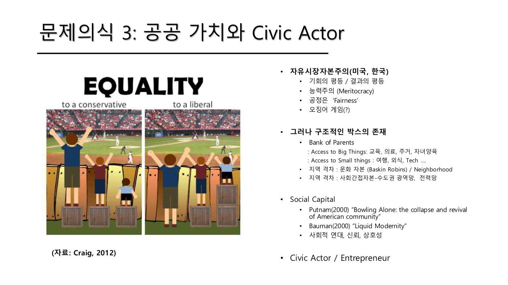
1) 자유시장 자본주의와 공정
- 📄 자유시장자본주의(미국, 한국). 기회의 평등 / 결과의 평등. 능력주의(Meritocracy). 공정은 'Fairness'. 오징어 게임(?).
- 🗣 중국은 스스로 사회주의라 하지만 실은 독재 자본주의.
- 🗣 그림(Craig 2012): 보수는 기회의 평등을 equality라 하고 결과의 평등은 equality가 아니라고 본다. 예전 방식은 국가가 개인 사이에 개입하는 방식이었는데, 이제는 개인들끼리 서로 주고받는 방식도 가능하다 — innovation ecosystem이 이런 방식일 수 있다는 복선.
- 🗣 인국공 사태: 인천공항 비정규직 정규직화를 "잘한 일"이라 생각했는데 사람들이 동의하지 않았다. 이건 공정이 아니라 동정이라는 것. → 피할 수 없는 정치적 가치의 문제.
- 🗣 능력주의: 공정은 기회의 공정이지 결과의 공정이 아니다. "기회는 평등하고 과정은 공정하고 결과는 정의롭다" — 정의·공정·평등이 무엇인지 계속 고민해야 한다.
- 🗣 오징어 게임: 자본주의의 룰을 누가 정하느냐를 적나라하게 드러냈다.
- 🗣 (W02) 최근 인사청문회 이슈들이 사회적 잣대로 들어와 있다. 부작용: 교수들이 공직에 손 들지 않게 됐다 — 수신제가치국평천하·입신양명처럼 public office를 가치 있게 여기던 문화가 바뀌고 있다.
2) 그러나 구조적인 박스가 존재한다
- 📄 Bank of Parents: Access to Big Things(교육, 의료, 주거, 자녀양육) / Access to Small Things(여행, 외식, Tech…).
- 🗣 큰 것은 점점 비싸져 접근이 어렵고, 작은 것은 다 비슷하게 산다. 그래서 평소엔 비슷해 보이지만 큰 일이 닥치면 확 벌어진다. 부모가 부자면 해결된다.
🗣 [W01 49:31] "점점 비싸지는 거죠. 대신에 여행이나 테크놀로지는 다 비슷하게 사는 것 같은데, 정작 이게 닥치면 확 벌어지는 거죠. 대신에 엄마 아빠가 부자면 다 해결된다. 저희 세대 때는 대학만 졸업하면 웬만하면 다 취직을 하고, 집값도 그랬는데 이제는 아니잖아."
- 🗣 세대 차이: 베이비붐 세대는 대학만 나오면 취직·집이 됐지만 밀레니얼은 아니다.
- 🗣 신자유주의는 20세기 후반의 룰. 어느 나라에서든 비즈니스를 할 수 있어 미국·영국에 유리했는데, 중국이 치고 올라오자 문을 닫기 시작했다.
- 🗣 한국은 GDP 대비 수출 비중 약 46%로 매우 높다(일본 20%, 영국·중국 약 30%, 대만 70%대). "대만을 무조건 따라 하라"는 칼럼은 컨텍스트가 다르다는 점을 숨기는 불공정한 논의.
3) 지역 격차
- 📄 문화 자본(Baskin Robbins) / Neighborhood. 사회간접자본 — 수도권 광역망, 전력망.
- 🗣 문화자본: 경상도 아이돌이 "니네 동네 백화점 있나, 스타벅스·배스킨라빈스 있나" 하는 농담이 곧 문화자본의 지표. 로컬 크리에이션·로컬 마켓 논의.
- 🗣 Neighborhood 효과: 미국 경제학자들이 신용카드 데이터로 동네별 분석 → 좋은 동네에서 좋은 대학·로스쿨에 더 많이 간다는 정량적 연결.
4) Social Capital
- 📄 Putnam(2000) Bowling Alone, Bauman(2000) Liquid Modernity. 사회적 연대, 신뢰, 상호성.
- 🗣 Putnam: 예전엔 동네·교회에서 모여 볼링을 쳤는데 점점 혼자 친다. 출퇴근이 길어지고 여가가 줄고 TV로 혼자 놀게 되면서 사회적 만남이 줄었다. 이를 다 측정했다.
- 🗣 Bauman: 폴란드 출신 유대인 좌파 사회학자. 정규직이 없어지고 여기저기 떠다니는 액체적 근대. 연대·신뢰·상호성이 줄어든다. (W02) 미국은 5천 달러씩 준다는 말이 나올 정도로 사회가 엉망 — 자리를 잡고 사회망을 쌓아야 하는데 부유(浮遊)하다 보니 연대가 깨진다.
- 🗣 한국의 경험: IMF 금 모으기, 코로나 시민 협조. Amitai Etzioni(공동체주의)는 일본·한국이 코로나를 성공적으로 해결한 것을 공동체적 시민성으로 본다. 고전적으로는 향약(鄕約)까지 거슬러 올라간다. 다만 질서를 침범하는 사람에겐 너그럽지 않다.
- 🗣 왜 중요한가: collective action problem을 풀려면 "같이 움직이는 것"에 대한 감이 있어야 하는데, 그 비용이 점점 높아지고 있다. → W01/01과 직결.
5) Civic Actor / Entrepreneur
- 🗣 (W02) 그래서 사람을 entrepreneur로만이 아니라 civic actor로 봐야 하지 않느냐.
- 🗣 (W02) GMO 사례: 유럽은 GMO를 공격적으로 반대했다(유럽 화학회사가 농약을 파니까 미국 GM에 반대한다는 해석도). 그런데 이제는 미국이 AI 데이터센터를 반대한다 — 맥락이 달라졌다. 가치 창출(value creation)도 중요하지만 civic actor가 무엇을 원하느냐, 그리고 공정성 문제가 같이 가야 한다.
수업에서 나온 논점
- W01 §9 Innovation Ecosystem: 🗣 밖에 두면서도 같이 갈 수 있게 하는 힘 = social capital. "같이 하자"는 신뢰가 있으면 법정으로 가지 않는다. 클러스터·사이언스파크가 되는 이유도 오랫동안 같이 일하며 쌓인 신뢰. → 이 개념이 생태계 거버넌스의 핵심 자원으로 재등장.
- W01 §9 Orchestrator: 박정희식 개발국가는 "잘 살아 보세"라는 국가에 대한 믿음(종족적 민족주의)으로 동원했지만, 다문화 사회에서는 같은 논리가 계속 통하지 않는다 → social capital의 원천이 바뀌고 있다.
보충 사례
- Putnam (2000): 미국의 지역 단체 가입률, 투표율, 이웃 방문 빈도 등이 1960년대 이후 일관되게 하락했음을 방대한 자료로 보여 준 책. 원인으로 TV, 통근 시간, 맞벌이, 세대 교체를 꼽았다.
- Bank of Mum and Dad는 영국에서 부모의 주택 구입 지원을 가리키는 관용구. 부모 지원이 사실상 영국 최대 "주택담보대출 기관" 규모라는 보도에서 퍼졌다.
- Chetty 등의 Opportunity Atlas(미국): 어린 시절 살던 동네(census tract)가 성인기 소득을 예측한다는 연구. 🗣 "Neighborhood 효과"가 가리키는 연구 흐름으로 보인다(교수가 특정 논문을 지목하지는 않음).
수업 프레임에서의 위치
- 문제의식 3. 문제의식 1(세 축의 상호구성)과 2(시스템 혁신)가 "어떻게 바뀌나"라면, 3은 "바뀐 결과가 누구에게 공정한가, 누가 참여하는가"다.
- W01/01의 collective action problem을 풀 자원(social capital)이 줄고 있다는 경고.
- Civic actor 개념은 W01/08 시민성 유형 → W12 Social Practice(소비자) → W15 신시민성(시민 = 혁신 주체)으로 발전한다.
- W02-2/08 "누가 새로운 문제를 제기할 권리를 갖는가"는 이 문제의식을 지식의 공공성 층위에서 다시 묻는 것.
관련 개념 · 논문
- Craig (2012) — 📄 equality 그림 출처. (원문 미확인)
- Putnam (2000) Bowling Alone — 🗣 social capital 감소.
- Bauman (2000) Liquid Modernity — 🗣 액체적 근대.
- Etzioni — 🗣 공동체주의, 코로나 대응.
- 연결: W01/01 · W01/03(사회적 인간) · W01/08 시민성 · W01/11(social capital과 거버넌스) · W02-2/08
예상 퀴즈 포인트
- 기회의 평등과 결과의 평등의 차이를 설명하고, "구조적인 박스"(Bank of Parents, 지역 격차)가 능력주의 논리에 던지는 문제를 서술하라.
- Social capital이란 무엇이며(Putnam, Bauman), 그것이 줄어드는 것이 왜 혁신(collective action)의 문제인가?
- 사람을 entrepreneur가 아니라 civic actor로 봐야 한다는 주장의 근거를 GMO·AI 데이터센터 사례로 설명하라.
- 비교형: 문제의식 1·2·3(인간–제도–과학기술 / 시스템 혁신 / 공공가치와 시민)이 각각 무엇을 묻는지 한 문장씩 쓰고 관계를 설명하라.
시민성 — 사회계약과 네 가지 유형
Citizenship as a Social Contract — Communitarian / Scientific / Digital / Ecological
Citizenship: A Social Contract
한 줄 정의
시민성(citizenship)은 "국민이면 이 정도는 한다"는 사회계약이다. 한국은 국가 위기 때 알아서 희생하는 공동체적 시민성으로 추격에 성공했지만, 이제 시민은 다른 얼굴로 나타난다. 전문가 판정을 못 믿어 직접 검증하는 과학적 시민, 디지털 접근을 요구하는 디지털 시민, 기술의 방향(온도 상승 한계)을 말하는 생태적 시민. 이들이 새 기술이 갈 방향을 말하는 citizen variety다.
쉽게 말하면
축구팀 비유(🗣 교수)가 곧 이것이다. 옛날 한국 축구는 "가끔 신이 천재(박지성)를 내려주는" 팀이었고, 국민도 "나라가 부르면 뛴다"는 팀이었다. 그런데 팀워크는 해 봐야 안다. 이제 시민은 감독(정부·전문가)이 "안전하다"고 해도 직접 공을 만져 보고(과학적 시민), 경기장에 못 들어가는 사람이 없게 하라고 하고(디지털 시민), 애초에 어떤 경기를 할지 정하자고 한다(생태적 시민). 팀의 룰을 선수도 같이 정하는 것이 새로운 시민성이다.
핵심 내용
📄 슬라이드 (W01 p12)
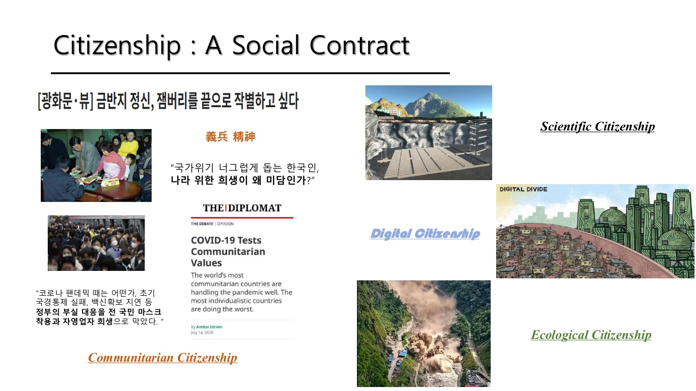
1) 🗣 도입: 축구 비유 — 팀워크는 해 봐야 안다
- 일본 축구인이 "한국은 별것 없는데 가끔 신이 천재를 내려준다"고 농담했는데, 지금 프리미어리그에 한국 선수는 없고 일본은 10명. 팀워크를 못 하는 것. 일본은 기본기와 "머리 쓰라"로 팀워크를 만들었다.
- 팀워크는 해 봐야 안다 — learning by doing. 추격이 된 것도 collective action.
🗣 [W01 59:15] "그 팀워크라는 거는 해봐야지 아셔야, 해봐야지. 직접 뛰어봐야지. … 러닝 바이 두잉, 러닝 바이 유징. 해봐야지 아는 거요. 해봐야지 아는 작업들을 하게 해줬느냐 아니었느냐. 그러니까 축구에서 필요한 지식은 이렇게 쌓여 있는 거."
2) 사회계약으로서의 시민성 — 📄 슬라이드 좌측
- 📄 의병 정신(義兵 精神): "국가위기 너그럽게 돕는 한국인, 나라 위한 희생이 왜 미담인가?" 금 모으기 사진, 마스크 쓴 출근길 사진.
- 📄 "코로나 팬데믹 때 초기 국경통제 실패, 백신확보 지연 등 정부의 부실 대응을 전 국민 마스크 착용과 자영업자 희생으로 막았다."
- 📄 Etzioni, The Diplomat (2020.7.14) "COVID-19 Tests Communitarian Values": 가장 공동체주의적인 나라들이 팬데믹을 잘 다루고, 가장 개인주의적인 나라들이 최악.
- 🗣 한국·일본이 해 온 것 = 공동체적 시민성(Communitarian Citizenship): "이 정도는 우리가 해야지"라는 규범. 그런데 이것이 달라지고 있다.
- 💡 슬라이드 제목의 "잼버리를 끝으로 작별하고 싶다"는 칼럼 제목은, 정부 실패를 시민 희생으로 메우는 방식(2023 새만금 잼버리 때 기업·시민 동원)을 이제 그만하자는 뜻.
3) 새로운 시민성의 세 유형 — 📄 슬라이드 우측
| 유형 | 📄 이미지 | 🗣 설명 | 핵심 요구 |
|---|---|---|---|
| Scientific Citizenship | 방폐장(지하 처분 시설) 단면도 | 국가·전문가가 안전하다고 해도 "안심이 안 돼, 우리가 직접 하겠어". 신고리 원전 공론화, 방폐장 사례 | 검증에 참여할 권리 |
| Digital Citizenship | Digital Divide 그림 | 접근 수단을 마련하고 교육 기회를 주라. 어르신의 키오스크 문제 — 자꾸 바꾸려면 교육도 같이 해야 한다 | 접근권과 학습 기회 |
| Ecological Citizenship | 산사태·개발 현장 사진 | 기온 상승에 리밋을 두어야 하지 않느냐고 주장하며 새로운 시민 주체가 등장 | 기술의 방향을 정할 권리 |
- 🗣 새 기술이 나올 때 어느 방향으로 갈지 말하는 사람들 = citizen variety. → W01/05 "고착을 깨는 변이"의 시민 버전.
4) 🗣 세 문제의식의 마무리
이 세 가지 문제의식(인간–제도–과학기술 / 시스템 혁신 / 공공가치와 시민)을 계속 던지면서 혁신시스템 접근들을 볼 것.
수업에서 나온 논점
- W01 §3 후쿠시마 엄마들: 정부 안전 판정에도 협동조합이 직접 방사능 검사 — "안전과 안심은 다르다." Scientific citizenship의 원형. → W01/03.
- W01 §9 Orchestrator: 개발국가의 동원은 "잘 살아 보세"라는 국가에 대한 믿음(종족적 민족주의)에 기댔다. 다문화 사회에서는 이 논리가 계속 통하지 않는다 → 공동체적 시민성의 기반이 바뀌고 있다는 또 다른 근거.
- W02 §1-3 프로슈머: 소비자가 자기 것을 만들어 쓰는 시대 → 시민이 혁신 주체가 되는 통로. W15 신시민성의 예고.
보충 사례
- 신고리 5·6호기 공론화(2017): 시민참여단 471명이 학습·토론 후 건설 재개를 권고. 전문가가 아닌 시민이 원전 결정에 참여한 한국 최초의 대규모 숙의 사례 — 🗣 "우리가 직접 하겠어"의 제도화된 형태.
- Energy citizenship(Campos & Marín-González 2020, W15 리딩): 시민이 에너지의 소비자에서 생산자·투자자·정책 참여자(prosumer)가 되는 것. Ecological + Digital citizenship이 만나는 지점.
- 키오스크 디지털 격차: 💡 한국 고령층의 키오스크 이용 어려움은 디지털 접근권 논의의 대표 사례. 🗣 "자꾸 바꾸려면 교육도 같이" = 기술 변화의 속도에 학습 기회가 따라와야 한다는 요구.
수업 프레임에서의 위치
- 문제의식 3의 결론부. Civic actor(W01/07)가 구체적으로 어떤 모습으로 나타나는지 유형화한 것.
- 공동체적 시민성 = 개발국가 시대의 시민 (W14). 새로운 세 유형 = 탈개발국가 시대의 시민 (W15 신시민성, 임홍탁 2025).
- Citizen variety는 세 고착(W01/05)을 깨는 세 변이 중 하나이고, 전환 실패(W01/06)의 "방향성·수요 표출" 문제에 대한 답이다.
- W02-2/08 "새로운 문제를 제기할 권리와 능력"은 Scientific citizenship을 지식의 공공성 관점에서 다시 쓴 것.
관련 개념 · 논문
예상 퀴즈 포인트
- 공동체적 시민성이란 무엇이며, 한국의 추격 성공 및 코로나 대응과 어떻게 연결되는가? 그것이 "달라지고 있다"는 말의 뜻은?
- Scientific / Digital / Ecological citizenship을 각각 정의하고 수업의 사례(신고리·방폐장, 키오스크, 기온 상한)로 설명하라.
- "Citizen variety"란 무엇이며, 세 가지 고착을 깨는 데 왜 필요한가?
- 비교형: 시민 인식론(W01/03)과 Scientific citizenship의 관계를 "안전 vs 안심"으로 설명하라.
혁신시스템 접근법의 계보
Innovation System Approaches by Disciplinary Context
Innovation System Approaches — 어느 학문에서 나왔나
한 줄 정의
한 학기 동안 배울 이론들은 세 개의 다른 학문 동네에서 나왔다. **혁신학(Innovation Studies)**은 "혁신은 집단 활동"이라는 문제의식에서 NIS·SIS·TIS·StS를 만들었고, 정치경제학은 노동·제도의 눈으로 SSIP를 만들었으며, 경영학은 기업의 눈으로 비즈니스 시스템·비즈니스모델 혁신·혁신생태계론을 만들었다. 같은 "시스템"이라는 말을 쓰지만 출신이 다르므로, 각 이론이 무엇을 설명하려고 태어났는지를 알고 읽어야 한다.
쉽게 말하면
같은 도시를 세 사람이 그린 지도라고 보면 된다.
- 혁신학자의 지도: 지식이 어디서 만들어져 어디로 흐르는지가 굵게 그려져 있다.
- 정치경제학자의 지도: 노동자·자본·제도의 권력 관계가 굵다.
- 경영학자의 지도: 우리 회사에서 고객까지 가는 길, 누가 우리 편인지가 굵다.
세 지도 다 같은 도시를 그렸지만 굵게 그린 길이 다르다. 나중에 term paper를 쓸 때 어느 지도를 들고 갈지 고르는 것이 분석틀 선택이다.
핵심 내용
📄 슬라이드 (W01 p13)
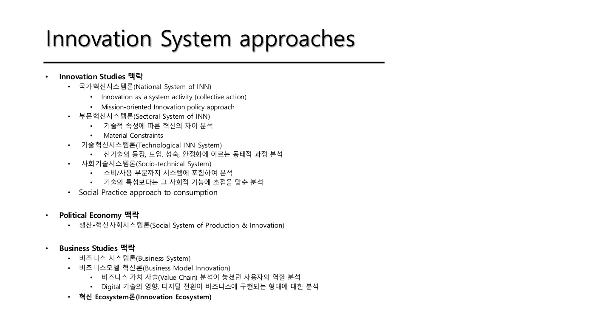
1) Innovation Studies 맥락
| 이론 | 📄 슬라이드의 설명 | 🗣 수업 언급 | 주차 |
|---|---|---|---|
| 국가혁신시스템 (NIS) | Innovation as a system activity (collective action) / Mission-oriented Innovation policy approach | 혁신을 집단 행동으로 보는 출발점 | (W13 MOIP로 이어짐) |
| 부문혁신시스템 (SIS) | 기술적 속성에 따른 혁신의 차이 분석 / Material Constraints | 산업마다 혁신 방식이 다르다 | W05 (10/10) |
| 기술혁신시스템 (TIS) | 신기술의 등장·도입·성숙·안정화에 이르는 동태적 과정 분석 | 새 기술이 어떻게 자리 잡는가 | W06 (10/17) |
| 사회기술시스템 (StS) | 소비/사용 부문까지 시스템에 포함하여 분석 / 기술의 특성보다 사회적 기능에 초점 | 생산과 소비를 아우름 | W09 (10/31) |
| Social Practice approach | to consumption | 소비를 관습으로 분석 | W12 (11/21) |
💡 이 계보의 순서가 곧 분석 단위의 확장 순서다. 국가 → 산업 부문 → 개별 기술 → 생산+소비 전체 → 일상의 실천.
2) Political Economy 맥락
- 📄 생산·혁신사회시스템 (SSIP, Social System of Production & Innovation)
- 🗣 노동 문제 등이 여기에 들어간다.
- 💡 자본주의의 국가별 차이(미국형 vs 독일·일본형)와 제도적 보완성(institutional complementarity)을 다룬다. W07 리딩이 Amable(2000), Casper & Whitley(2004)인 이유.
- 주차: W07 (10/24)
3) Business Studies 맥락
| 이론 | 📄 슬라이드 | 🗣 수업 언급 | 주차 |
|---|---|---|---|
| 비즈니스 시스템 (BS) | — | 파이낸스가 강하게 들어감 | W07 (10/24) |
| 비즈니스모델 혁신 (BMI) | 비즈니스 가치사슬(Value Chain) 분석이 놓쳤던 사용자의 역할 분석 / Digital 기술의 영향, 디지털 전환이 비즈니스에 구현되는 형태 | 디지털 전환 | W11 (11/14) |
| 혁신 Ecosystem론 | (굵게 강조된 항목) | 이번 주 다룰 주제 | W01 §9, 학기 전체의 종착점 |
4) 🗣 읽는 법 — 왜 계보를 먼저 보나
- 이 슬라이드는 강의 전체의 목차이자 지도다. 매주 새 이론이 나올 때 "이건 어느 동네에서 온 이론인가"를 이 표에서 찾으면 위치가 잡힌다.
- 📄 슬라이드에서 혁신 Ecosystem론만 굵게 표시되어 있다 — 학기의 종착점이자 W01에서 미리 맛보는 주제.
- 🗣 (W02) 이 수업의 기본 입장은 펌(firm) 레벨에서 어떻게 시스템을 만들 것인가이고, 마지막 주제인 혁신생태계론이 이를 펌 단위로 다룬다. → 즉 Business Studies 쪽 끝에서 다시 만나는 구조.
수업에서 나온 논점
- **W01 §8 직후 세 유형 분류(p14)**가 이 계보를 다른 축으로 다시 자른 것이다. 계보가 "어디서 왔나(학문)"라면, 세 유형은 "무엇을 보나(구조의 차이/변화/기작)". → W01/10.
- Term paper와의 연결: 🗣 term paper는 케이스 스터디이고 "수업에서 다룬 프레임워크 중 마음에 드는 것을 골라 케이스에 적용"하는 것. 이 계보표가 곧 고를 수 있는 프레임워크 목록이다. →
수업노트/W01 §0 수업 방식
보충 사례
- NIS의 출발: Freeman(1987)이 일본의 성공을 설명하며 "국가혁신시스템"이라는 말을 썼고, Lundvall(1992)과 Nelson(1993)이 각각 학습·제도 중심, 국가 비교 중심으로 발전시켰다. 세 사람의 강조점이 달라서 NIS는 하나의 이론이라기보다 접근법의 묶음에 가깝다.
- 같은 현상, 다른 이론: 전기차 전환을 예로 들면 — SIS는 "자동차 산업의 기술 체제가 어떤가", TIS는 "배터리 기술이 어떤 단계인가", StS는 "충전·주차·운전 관습까지 어떻게 바뀌나", BMI는 "테슬라의 수익 모델이 무엇인가", Ecosystem은 "누가 오케스트레이터이고 병목은 어디인가"를 묻는다. 💡 같은 케이스도 어느 틀을 쓰느냐에 따라 전혀 다른 논문이 된다.
수업 프레임에서의 위치
- W01/01(혁신은 시스템이다)에서 출발한 문제의식이 실제로 어떤 이론들로 구현되어 있는지 보여 주는 목록.
- W01/10(세 유형)과 짝을 이루는 두 장의 지도. 계보 = 출신, 유형 = 기능.
- 퀴즈에서 "SIS와 TIS와 StS의 분석 단위 차이"처럼 이론 간 비교 문제가 나올 가능성이 높다(AGENTS.md 퀴즈 지침에도 비교형 포함 명시). 이 표가 그 비교의 기준선.
관련 개념 · 논문
- 각 이론의 Core Reading은 주차별 리딩리스트 참조 (SIS: Malerba & Orsenigo 1997, Pavitt 1984 / TIS: Bergek et al. 2008 / StS: Geels 2004 / SSIP: Amable 2000 / BMI: Sarasini & Linder 2018).
- 연결: W01/01 · W01/04 · W01/10 세 유형 · W01/11 Innovation Ecosystem
예상 퀴즈 포인트
- 혁신시스템 접근법을 세 학문 맥락(Innovation Studies / Political Economy / Business Studies)으로 나누고, 각 맥락에 속하는 이론을 쓰라.
- NIS, SIS, TIS, StS의 분석 단위가 각각 무엇인지 비교하라. (국가 / 산업 부문 / 개별 기술 / 생산+소비 전체)
- StS가 다른 혁신시스템론과 구별되는 두 가지 특징을 슬라이드 표현으로 쓰라. (소비/사용 부문 포함, 기술 특성보다 사회적 기능에 초점)
혁신시스템 유형 3분류 — 강의 지도
Innovation System Types — Difference / Change / Mechanism of Change
구조의 차이 / 구조의 변화 / 구조 변화의 기작
한 줄 정의
한 학기의 이론들을 무엇을 설명하려는가로 세 묶음으로 나눈 지도. ① 구조의 차이 — 나라·산업마다 혁신 방식이 왜 다른가(NIS, SIS, SSIP, BizS). ② 구조의 변화 — 그 구조가 어떻게 바뀌는가(TS, TIS, StS + Transition). ③ 구조 변화의 기작 — 바뀔 때 구체적으로 무슨 메커니즘이 작동하는가(BMI, SPT, MOIP, Ecosystem). 뒤로 갈수록 더 미시적이고 더 실천적이다.
쉽게 말하면
강을 연구하는 세 가지 방법에 가깝다.
- 구조의 차이: 한강과 낙동강은 왜 다르게 생겼나. 지도 두 장을 펴 놓고 비교한다.
- 구조의 변화: 이 강줄기가 100년 동안 어떻게 옮겨 갔나. 시간축을 본다.
- 구조 변화의 기작: 물이 어느 지점에서 어떻게 흙을 깎아 물길을 바꾸는가. 삽을 들고 현장에 간다.
앞의 둘은 "설명"이고 셋째는 "개입"에 가깝다. 그래서 term paper를 쓰거나 실무에 적용할 때는 셋째 묶음이 쓸모가 크다.
핵심 내용
📄 슬라이드 (W01 p14)
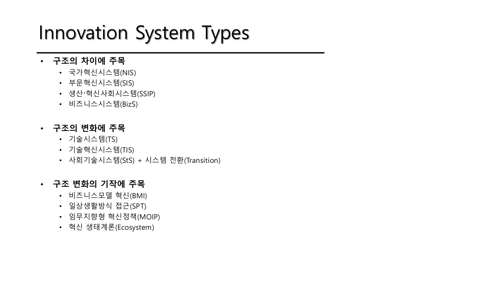
1) 세 유형 — 🗣 교수 설명과 함께
| 유형 | 포함 이론 | 🗣 무엇을 보나 | 주차 |
|---|---|---|---|
| 구조의 차이 | NIS, SIS, SSIP, BizS | 한국과 일본이 다르다. 조선·자동차·전자 산업이 다르다. 미국·독일·영국 시스템이 다르다. | W05, W07 |
| 구조의 변화 | TS, TIS, StS + Transition | 새 기술이 어떻게 자리 잡는가. StS는 기술보다 소비에 집중 | W06, W09, W10~ |
| 구조 변화의 기작 | BMI, SPT, MOIP, Ecosystem | 앞의 것보다 더 미시적으로 메커니즘을 봄 | W11~W13, 종착점 |
- 🗣 **TS(기술시스템)**의 고전은 Hughes의 미국 전력시스템 역사 연구. TIS는 스웨덴 학파 등.
- 🗣 오늘(W01) 다룰 Ecosystem 부분은 Adner 등 5편 정도의 논문(2006, 2010, 2016, 2017, 2018, 2020년대)을 정리한 것.
2) 세 유형과 문제의식의 대응 💡
이 분류는 W01의 세 문제의식과 이렇게 맞물린다.
| 유형 | 대응하는 문제의식 | 핵심 질문 |
|---|---|---|
| 구조의 차이 | 문제의식 1 (인간–제도–과학기술) | 세 축의 배합이 나라·산업마다 어떻게 다른가 |
| 구조의 변화 | 문제의식 2 (시스템 혁신) | 고착된 시스템이 어떻게 바뀌는가 |
| 구조 변화의 기작 | 문제의식 3 (공공가치·시민) + 실무 | 누가 어떤 수단으로 바꾸는가 (기업·시민·국가) |
3) 왜 뒤로 갈수록 미시적인가
- 구조의 차이는 국가·산업 단위에서 비교한다(거시).
- 구조의 변화는 하나의 기술·시스템이 겪는 시간을 본다(중간).
- 구조 변화의 기작은 기업의 비즈니스 모델, 개인의 일상 관습, 정책의 임무 설계, 생태계의 병목 같은 구체적 작동 지점을 본다(미시).
- 🗣 그래서 마지막 묶음은 "펌 레벨에서 어떻게 시스템을 만들 것인가"라는 이 수업의 기본 입장(W02 §1-1)과 가장 가깝다.
수업에서 나온 논점
- Term paper 선택과 직결: 🗣 케이스 스터디에 "수업에서 다룬 프레임워크 중 마음에 드는 것을 골라 적용". 케이스가 비교라면 첫째 묶음, 변화 과정이라면 둘째, 개입·전략이라면 셋째를 고르는 것이 자연스럽다.
- W01 §9 Ecosystem이 셋째 묶음에 속한다는 점이 중요하다. 🗣 "생태계 전략은 외부의 병목을 정확히 짚어 내고 자율적인 파트너들을 구조적으로 정렬시키는 도구" — 설명이 아니라 작동 메커니즘과 개입의 언어다.
보충 사례
- Hughes (1983) Networks of Power: 에디슨의 전력시스템이 미국·영국·독일에서 각각 다르게 자리 잡은 과정을 추적한 기술사 연구. "기술은 사회적·정치적·경제적 요소와 함께 시스템으로 성장한다"는 관점과 역돌출부(reverse salient)(시스템 전체의 발전을 가로막는 뒤처진 구성요소) 개념을 남겼다. 💡 역돌출부는 W01/11의 병목(bottleneck) 개념과 사실상 같은 문제의식이다.
- 💡 한 케이스를 세 묶음으로 다르게 보기 — 한국 반도체: ① 구조의 차이(왜 한국은 메모리에 특화됐나, SIS) ② 구조의 변화(DRAM 기술이 어떻게 자리 잡았나, TIS) ③ 기작(ASML·소재 공급망에서 누가 병목을 쥐나, Ecosystem).
수업 프레임에서의 위치
- W01/09(계보 = 어느 학문에서 왔나)와 짝을 이루는 두 번째 지도(무엇을 설명하나).
- AGENTS.md에도 이 분류가 "강의 전체를 관통하는 프레임"으로 기록되어 있다. 학기 내내 돌아올 좌표계.
- 퀴즈 비교형 문제의 기본 축: "SIS vs TIS vs StS의 분석 단위 차이" 같은 문제는 이 표에서 답이 나온다.
관련 개념 · 논문
- Hughes (1983) — 💡 TS의 고전. 역돌출부(reverse salient).
- Adner (2006, 2017), Adner & Kapoor (2010), Jacobides et al. (2018), Granstrand & Holgersson (2020) — 🗣 Ecosystem 묶음의 논문들. → W01/11.
- 연결: W01/09 계보 · W01/04 · W01/05 세 가지 고착 · W01/11 Innovation Ecosystem
예상 퀴즈 포인트
- 혁신시스템 이론을 세 유형으로 분류하고 각 유형에 속하는 이론을 쓰라. 각 유형이 답하려는 질문은 무엇인가?
- "구조의 차이"와 "구조의 변화"를 보는 이론의 차이를 예를 들어 설명하라.
- 왜 BMI·SPT·MOIP·Ecosystem을 "구조 변화의 기작"으로 묶는가? 앞의 두 묶음과 무엇이 다른가?
- 응용: 자신이 관심 있는 케이스를 하나 고르고, 세 유형 각각의 관점에서 어떤 질문을 던질 수 있는지 써 보라. (term paper 준비용)
Innovation Ecosystem — 병목·오케스트레이터·거버넌스
Innovation Ecosystem (Adner; Adner & Kapoor; Jacobides et al.; Granstrand & Holgersson)
학기의 종착점을 W01에서 미리 보기
한 줄 정의
내 제품이 아무리 좋아도, 남들이 제 몫을 해 주지 않으면 가치가 만들어지지 않는다. 혁신생태계론은 이 상호의존을 정면으로 다루는 이론이다. 핵심 질문 세 개: ① **병목(bottleneck)**이 어디 있는가, ② 누가 오케스트레이터로서 판을 짜는가, ③ 명령할 권한이 없는 파트너들을 어떻게 **정렬(alignment)**시키는가.
쉽게 말하면
오케스트라를 떠올리면 된다. 지휘자(오케스트레이터)는 단원을 해고할 권한이 없다 — 다들 독립 연주자다. 그래도 곡이 되려면 모두가 같은 박자로 가야 한다. 이때 지휘자가 할 일은 두 가지다. 어느 파트가 곡 전체를 망칠 수 있는지(병목) 알아 두는 것, 그리고 "이 곡이 되면 다 같이 좋다"는 그림(가치 제안)으로 자발적으로 맞추게 하는 것.
교수의 표현으로는 이렇다. 🗣 "내가 힘이 세면 내가 규칙을 만들어 버리면 된다. 힘이 세지 않고 병목이 저쪽에 있으면 제일 잘 꼬셔야 하는데, 그때는 규칙을 만드는 커뮤니티를 같이 꾸려 나가는 작업이 필요하다."
핵심 내용
📄 슬라이드 (W01 p15) — 이론의 출처가 된 논문들
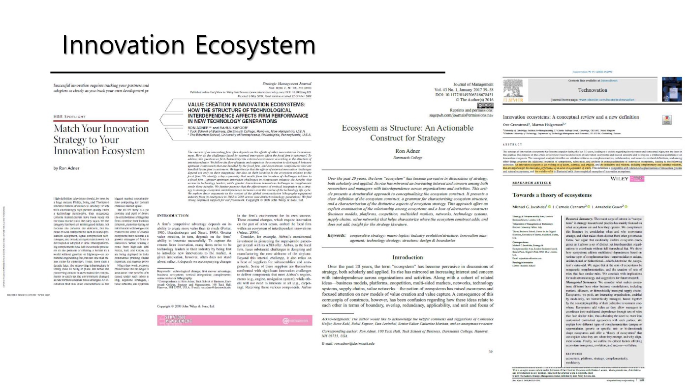
🗣 이 부분은 Adner 등 5편 정도의 논문(2006, 2010, 2016, 2017, 2018, 2020년대)을 정리한 것이다.
1) 병목(bottleneck) — 생태계 분석의 출발점
🗣 안전이 병목이 될 수 있다. 공군 참석자와의 대화에서: 드론은 무인이 되지만 사람이 탑승한 기체의 무인 이착륙은 어렵다. 자동차 FSD도 안전 문제에 계속 걸린다.
🗣 [1:11:38] "안전이 병목이 된다는 얘기는 안전한지 안 한지를 평가할 줄 알아야 되고 어떤 규정을 써야 될지를 알아야 됩니다. 그 시스템을 갖추고 있어야 돼요. 그리고 그 시스템은 웬만하면 넘기지 말아요. 전략적인 움직임이."
→ 병목을 쥔다는 것은 단순히 부품을 만드는 것이 아니라 평가할 줄 알고 규정을 쓸 줄 아는 것이다. 그 역량은 전략적 자산이므로 외주화하지 말라는 실무 조언.
🗣 AI 파운데이션 모델에서도 같은 논리: 군사·전력 등 안보에 민감한 곳은 성능이 최고가 아니어도 우리 것을 써야 한다. 나머지는 비교우위로 간다. → 병목(안전이 걸린 곳)을 노리는 작전.
2) 컴포넌트 vs 컴플리먼트 — 병목의 두 방향 ★
이 구분이 Adner & Kapoor(2010)의 핵심이고 퀴즈·토론 질문에도 나온다.
| 컴포넌트 (component, 상류) | 컴플리먼트 (complement, 하류) | |
|---|---|---|
| 뜻 | 나에게 납품하는 쪽 (부품·소재·장비) | 옆·뒤에서 지원하는 보완재 (앱, 서비스, 인프라) |
| 병목이 클 때 선도자는 | 유리하다 — 경쟁자가 쉽게 못 들어온다 | 불리하다 — 다른 회사가 기존 기술로 따라와 시장을 먹는다 |
| 🗣 수업 설명 | 상류 부품 병목이 높으면 진입장벽이 된다 | 하류 보완재에 병목이 생기면 선도자는 오히려 시장을 잃는다 |
🗣 ASML 노광장비 생태계: 리소그래피 기업들이 상류 부품 업체(감광액 등)와 함께 기술을 개발해 왔다. 고도의 engineering-intensive, science-intensive 부품 쪽에서 강력한 진입장벽 — 쉽게 학습되지 않는다. Adner & Kapoor가 이를 데이터로 측정해 보여 줬다.
💡 왜 비대칭인가(토론 질문 4번의 답을 만들 실마리): 상류 병목은 경쟁자도 똑같이 겪는 장벽이라 선도자의 시간 우위를 지켜 준다. 반면 하류 병목은 선도 기술의 가치 실현 자체를 늦춘다 — 내 신기술이 아무리 좋아도 보완재가 준비 안 되면 고객은 성능을 체감하지 못하고, 그 사이 기존 기술이 개선되어 따라잡는다. (HDTV가 방송 표준·콘텐츠를 기다리는 동안 아날로그 TV가 계속 팔린 것이 Adner의 대표 예시)
3) 수직 통합 vs 외부 조달의 딜레마 — 그리고 social capital
- 🗣 아날로그·물리적 기술 생태계에는 **물질적 단절성과 지연(delay)**이 존재한다.
- 🗣 딜레마: 저 회사 제품이 나와 잘 맞는데 밖에 두면 말을 안 들을지 모른다(hold-up). 그렇다고 안으로 들이면 유연성을 잃는다.
🗣 [1:12:xx] "쟤가 파는 게 나한테 되게 맞아. 근데 밖에다 두니까 내 말을 안 들을지 모르겠어. … 그 홀드업 하는 것도 있잖아. 요소수 이런 거 꼭 필요한데, 그럼 우리가 하는 수밖에 없어."
- 🗣 일본의 수출 규제, 요소수 사태처럼 꼭 필요한데 병목이 밖에 있으면 결국 우리가 할 수밖에 없다.
- 🗣 밖에 두면서도 같이 갈 수 있게 하는 힘 = Social Capital. "같이 하자"는 신뢰가 있으면 법정(court)으로 가지 않고 상호의존을 맞춰 나갈 수 있다.
🗣 [1:13:17] "꼭 (통합)하지 않더라도 '야 같이 하자'라는 그런 신뢰와 믿음이 있으면, 그때의 힘이 이제 소셜 캐피탈. 이거 없으면 다 법정으로 가야 되는 거죠."
- 🗣 캐나다 잠수함 수주 사례: 납기·가격 같은 프로그램적 요소에서는 우리가 훨씬 나은데, 서로 죽이 맞느냐 같은 관계 요소에서 밀린다. 그런 것까지 다 살려야 한다. → W01/07의 social capital이 생태계 전략의 실무 자원으로 재등장하는 대목.
4) 오케스트레이터(Orchestrator) 전략
- 🗣 새로운 생태계·사업을 만들 때 전략가가 그림을 그리는 역할.
- 🗣 생태계 통제 방식은 위계에 의한 강제 vs 자발적 정렬(voluntary alignment) 둘로 나뉜다. 파트너들은 각자 독립성과 자율성을 가지므로, 강제가 아니라 "우리 다 같이 가는 거야"가 필요하다. 여기서 social capital이 중요해진다.
- 🗣 박정희식 개발국가는 국가가 동원한 사례: "잘 살아 보세, 가난 탈출하자"라는 국가에 대한 믿음 — 학계는 이를 **종족적 민족주의(ethnic nationalism)**로 표현한다. 그러나 이제 한국도 다문화 가정이 많아 같은 동원 논리가 계속 통하지 않는다.
- 🗣 누가 룰을 정하고 역사를 쓸 것인가 — 통제권 경쟁이 치열하다. 이 거버넌스를 어떻게 잘할 것인가가 숙제. 경영이 자기 회사만 보는 것이 아니다.
5) 사례들 🗣
(a) Apple iTunes — 오케스트레이션의 교과서
- 90년대 중반부터 온라인 음악 시장이 커지며 불법 다운로드가 난무했고 저작권 문제로 모두가 병목에 갇혀 있었다.
- 애플은 DRM 기술이 등장할 때까지 기다렸다가 iPod(기기) + iTunes(플랫폼)로 생태계를 만들었다. 음원사들도 동의했다.
🗣 [1:18:37] "MP3 플레이어는 다른 데서 다 했어. 음원사들도 다 동의를 하고. 스티브 잡스가 한 일은 아마도 그 일이 굉장히 클 겁니다. 오케스트레이터 역할을 한 것이지, 새로운 신기술을 만들겠다기보다는 오케스트레이터를."
→ 병목(저작권)이 풀리는 시점을 기다렸다가 진입한 것. 9-6의 "완벽한 시점에 진입해 마지막 퍼즐이 된다"는 전략의 실례.
(b) VCR 표준 전쟁: 소니(베타) vs JVC(VHS). JVC가 거버넌스를 개방해 파트너 참여를 이끌어 내며 생태계 우위를 형성.
(c) 스마트폰 생태계 패권 이동: 노키아(심비안)는 외부 유입을 차단하고 자기 것만 했다. 구글 안드로이드는 오픈 + 모듈러 기술로 **초모듈성(hyper-modularity)**을 만들어 연합군을 모았다. 네트워크가 생기면 스위칭이 잘 안 된다(→ W01/05 사용자 고착). 🗣 피지컬 AI 전쟁에서 이것을 어떻게 할지가 표준적 질문이며, 중국이 사실상 이 오픈 작전을 쓰고 있다. 다만 아프리카 등에서 AI를 쓰려면 전력 인프라가 먼저 — 여기서는 전력 시스템이 병목.
(d) AI 파운데이션 모델: 미국 팀(Claude, ChatGPT, Gemini)은 폐쇄형, 중국(Qwen 등)은 오픈 웨이트. 미국 스타트업도 중국 모델을 많이 쓴다고 한다.
6) 분석틀: Generic vs Unique — 시장으로 갈까 생태계로 갈까
🗣 컴포넌트든 컴플리먼트든:
- Generic한 것은 시장에서 구할 수 있으니 생태계를 굳이 만들 필요가 없다.
- Unique한 것은 ① 직접 만들거나(수직통합) ② 생태계로 가거나 ③ 플랫폼을 더 오픈하게 만들어야 한다.
🗣 추가 고려:
- 소비자도 complementor로 등장한다 — 생산만 있는 게 아니다. 소비자가 최종 시스템 통합자(system integrator) 역할을 할 수 있다.
- 병목이 어디 있는가: 상류인가 하류인가, 디지털 모듈인가, 기업 자체인가 지역인가, 소비자의 통합자 역할인가.
- 거버넌스 판단: 내가 힘이 세면 내가 규칙을 만든다. 힘이 세지 않고 병목이 저쪽에 있으면 제일 잘 꼬셔야 하고, 그때는 규칙을 만드는 커뮤니티를 같이 꾸려 나가는 작업이 필요하다. 커먼스(commons)도 마찬가지 — 모두가 동의하고 정렬되어야 한다.
🗣 [1:26:30] "내가 힘이 세면 내가 규칙을 만들어버리면 돼요. 내가 힘이 그렇게 안 세고 병목이 저쪽에 있어, 그럼 제일 잘 꼬셔야 되는데. 그럴 때는 규칙을 만드는 커뮤니티, 그걸 같이 잘 꾸려나가는 그런 작업이 필요하다. 이거는 다른 일에도 다 마찬가지."
🗣 인용(교수: "말 잘 썼네"): "생태계 전략은 단순히 네트워킹을 늘리는 것이 아니다. 외부의 병목을 정확히 짚어 내고, 가치 제안(value proposition)이라는 중력을 통해 자율적인 파트너들을 구조적으로 정렬시키는 도구다."
🗣 단, 오케스트레이터가 머리를 잘 써서 끌고 가는 solo act처럼 들리지만, 실제로는 처음에 당기는 사람·못 따라오는 사람이 있고 "으샤으샤 기세" 같은 것도 크게 작용한다. → W01/01의 "혁신은 solo act가 아니다"가 생태계 이론 안에서도 반복된다.
7) 두 가지 리스크와 매핑
- 🗣 병목 매핑 절차(슬라이드): 중개자 색출 → 동반자 색출 → 지연 추정 → 채택 및 처리 시간 추정 → 중개자 선정·이전성 비용 조정 → 시장 진입 시간 산출 → 전략 재평가·실행. ※녹취 불명확, 단계명은 근사치.
- 📄 Discussion 질문에 나오는 두 리스크 (→ 아래 8번):
- 상호의존성 리스크(interdependence risk) = 확률의 곱. 💡 파트너 A가 성공할 확률 0.8, B도 0.8, C도 0.8이면 전체 성공 확률은 0.8³ ≈ 0.51. 파트너가 늘수록 급격히 떨어진다.
- 통합 리스크(integration risk) = 지연의 합. 💡 각 단계가 2개월씩 늦으면 3단계면 6개월. 누적된다.
- → 자원배분 시사점: 곱셈 리스크는 약한 고리 하나를 집중 보강하는 것이 효과적이고, 덧셈 리스크는 단계 수 자체를 줄이거나 병렬화하는 것이 효과적이다.
8) 기술적 불확실성 vs 행동주의적 불확실성
- 🗣 경제학·정책결정자는 "기술은 하면 되는 것", "전문가에게 맡기면 되는 것"으로 이해하는 경향(기술을 자본과 노동의 조합으로 설명). 사실은 그렇지 않다.
🗣 [1:30:01] "기술은 하면 되는 거냐, 혹은 전문가를 동원하면 되는 걸로 이해하는데. 경제학에서는 기술을 자본과 노동의 조합으로 다 설명하고 있기 때문에. 사실은 그렇지가 않아. 시간이 지난다고 그냥 학습 곡선이 쭉 되는 거 아니에요. 계속 부딪히고 고민을 해야 됩니다."
- 🗣 수직적 통합은 기술적 난점보다 행동주의적 기회주의를 통제하는 데 효과적이다. 기술이 초기 단계일 때는 내재화(수직 통합)가 맞다.
- 🗣 클러스터·사이언스파크가 왜 되는가: 집적(agglomeration)도 있지만 오랫동안 같이 일하며 쌓인 신뢰 = social capital이 살아 있기 때문.
- 🗣 MBA에서는 기술이 성숙하면 끊고 외부 조달로 가라고 하지만, 실제로는 long friendship을 계속 가져가는 게 나을 수 있다. 컨텍스트에 따라 다르다. 그래서 팀워크가 어렵다.
🗣 [1:32:18] "MBA에서는 성숙한 단계에 접어들 때는 그냥 끊고 부품 외주로 가라고 얘기를 하지만, 실제에서는 안 그럴 수도 있다. 오히려 계속해서 그렇게 관계를 가져가는 게, 롱 프렌드십을 가지고 가는 거죠."
- 🗣 결론: 생태계를 전체 구조적 관점에서 체계적으로 분석하면 기업이나 시장을 넘어서는 압력과 혁신적 기회를 제대로 분석할 수 있다. 🗣 "그게 이제 우리가 공부하는 까닭이긴 하죠."
수업에서 나온 논점
📄 Discussion 질문 (W01 p16)
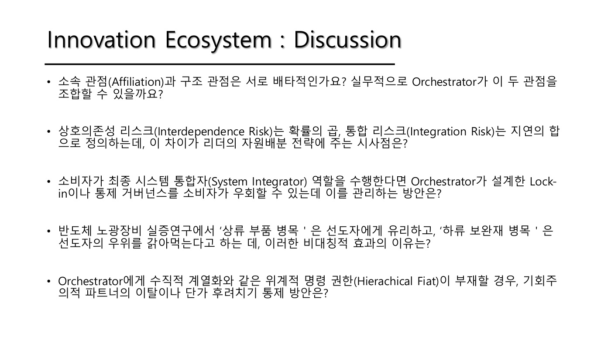
🗣 교수가 AI로 뽑아 본 토론 질문.
- **소속 관점(affiliation)과 구조 관점(structure)**은 서로 배타적인가? 오케스트레이터가 두 관점을 조합할 수 있을까? 💡 affiliation = "누가 우리 생태계 멤버인가"로 보는 관점(플랫폼·커뮤니티), structure = "가치 제안을 중심으로 활동과 포지션이 어떻게 배열되는가"로 보는 관점(Adner 2017).
- 상호의존성 리스크(확률의 곱) vs 통합 리스크(지연의 합) — 자원배분 전략에 주는 시사점은?
- 소비자가 최종 시스템 통합자가 되면 오케스트레이터가 설계한 lock-in·통제를 우회할 수 있는데, 이를 어떻게 관리하나?
- 반도체 노광장비 실증에서 상류 부품 병목은 선도자에게 유리, 하류 보완재 병목은 선도자의 우위를 갉아먹는다 — 이 비대칭의 이유는?
- 오케스트레이터에게 위계적 명령 권한(hierarchical fiat)이 없을 때, 기회주의적 이탈이나 단가 후려치기를 어떻게 통제하나?
- (🗣 추가) 한국 개발국가 시대 현대자동차의 전략을 혁신생태계론으로 재구성하면?
W02 토론에서 이어진 것
- Q1. 애플은 폐쇄적인데 왜 생태계에 성공했나 (노키아 심비안 vs 안드로이드 대비)
- 참석자: 폐쇄성보다 기술적 진보성이 앞서면 성공할 수 있다. 기술 헤게모니와 폐쇄성은 다른 문제.
- 곽현우: 애플 안에 들어간 부품은 대부분 타사 제품(폴더블도 삼성 디스플레이). 껍데기는 폐쇄인데 공급망은 오픈 아닌가?
- 🗣 정리: "오픈"의 의미를 정확히 봐야 한다. 안드로이드의 오픈은 API 오픈, 애플의 하드웨어 조달은 공급망 오픈. 그렇다면 차이는 오케스트레이션을 누가 하느냐 — 애플은 꽉 잡았고 안드로이드는 풀어 줬다.
- 🗣 가설: 애플이 오케스트레이션할 수 있었던 것은 기술도 있지만 **원래 이 생태계에 속해 있던 로열한 소비자(팬덤)**가 많았기 때문. 소니가 애플처럼 팬덤을 확보했다면 또 달랐을 것. →
수업노트/W02 §6 Q1
- Q5. 큰 조직에서 누적되는 통합 리스크(지연의 합)를 어떻게 해소하나 (김태훈)
- 🗣 원래 생태계론의 통합 리스크는 외부 스테이크홀더 얘기인데 여기선 회사 내부 문제. 이 이론의 장점은 관계된 사람을 다 생각하며 시간을 계산해 보라는 것 — 너무 오래 걸리면 하지 말고, 줄일 방법이 있으면 도전하라.
- 🗣 해법: 태스크포스를 조직 바깥에 따로 만들어라. R&D 조직이면 특히 — DARPA처럼 따로 돈 주고 묻어 두는 개념. 탑다운 시스템의 장점이 바로 이것 — 대장이 딱 찍어 따로 만들어 힘을 실어 줄 수 있다. →
수업노트/W02 §6 Q5
보충 사례
- **Adner (2006, HBR)**의 대표 예시는 HDTV다. 방송사·콘텐츠·표준이 준비되지 않아 필립스·소니·톰슨이 수십억 달러를 쓰고도 시장을 못 열었다. 슬라이드 p15의 HBR 논문 표지가 이것 — "성공적 혁신은 자기 개발만큼 파트너와 잠재 채택자를 추적해야 한다"는 첫 줄이 곧 이 이론의 요지.
- Jacobides et al. (2018): 생태계가 왜 생기는가를 **모듈성(modularity)**과 **비일반적 보완성(non-generic complementarity)**으로 설명한다. 모듈화되어 있으면 위계 없이도 조율이 가능하고, 보완재가 특수할수록 시장 대신 생태계가 필요해진다. → 🗣의 "Generic vs Unique" 분석틀의 이론적 근거.
- Granstrand & Holgersson (2020): 난립하던 정의들을 정리해 "혁신생태계는 행위자·활동·인공물, 그리고 보완적·대체적 관계를 포함하는 제도와 관계의 집합으로, 어떤 행위자 집단의 혁신 성과에 중요한 것"이라고 재정의했다. 💡 **대체 관계(substitute relations)**까지 넣은 것이 이전 정의와의 차이.
수업 프레임에서의 위치
- W01/10의 세 유형 중 **"구조 변화의 기작"**에 속한다. 설명이 아니라 개입과 전략의 언어를 쓴다.
- 학기의 종착점을 W01에서 미리 보여 준 것. 중간의 모든 이론(SIS·TIS·StS·SSIP·BMI)을 거친 뒤 다시 돌아온다.
- W01/01(혁신은 collective), W01/05(사용자 고착·switching cost), W01/07(social capital)이 여기서 실무 전략 언어로 재등장한다. 즉 W01의 문제의식들이 수렴하는 지점.
- 🗣 W02 §1-1의 수업 기본 입장("펌 레벨에서 어떻게 시스템을 만들 것인가")이 곧 이 이론의 관점.
관련 개념 · 논문
- Adner (2006) HBR — HDTV, 파트너·채택자 추적.
- Adner & Kapoor (2010) SMJ — 상류 컴포넌트 vs 하류 컴플리먼트의 비대칭. 반도체 노광장비(1962–2005) 실증.
- Adner (2017) JoM "Ecosystem as Structure" — affiliation vs structure 관점.
- Jacobides et al. (2018) SMJ — 모듈성과 보완성.
- Granstrand & Holgersson (2020) Technovation — 개념 리뷰와 새 정의.
- 연결: W01/01 · W01/05 세 가지 고착 · W01/07 social capital · W01/10 강의 지도
예상 퀴즈 포인트
- 혁신생태계에서 **병목(bottleneck)**이란 무엇이며, "안전이 병목이 된다"는 말의 뜻을 설명하라. 병목을 쥔 역량을 외주화하지 말라는 조언의 근거는?
- 컴포넌트 병목과 컴플리먼트 병목이 선도자에게 미치는 영향이 왜 비대칭적인가?
- 오케스트레이터의 통제 방식 두 가지(위계적 강제 / 자발적 정렬)를 설명하고, 후자에서 social capital이 왜 중요한지 서술하라.
- 상호의존성 리스크와 통합 리스크의 정의 차이(확률의 곱 / 지연의 합)와 그것이 자원배분 전략에 주는 시사점을 쓰라.
- Generic vs Unique 분석틀을 써서, 어떤 경우에 시장 조달로 가고 어떤 경우에 생태계·수직통합으로 가야 하는지 설명하라.
- 사례형: iTunes 사례에서 스티브 잡스가 한 일이 "신기술 개발"이 아니라 "오케스트레이션"이었다는 말의 뜻을 병목 개념으로 설명하라.
- 비교형: "오픈"의 두 가지 의미(API 오픈 vs 공급망 오픈)를 애플과 안드로이드로 구분해 설명하라.